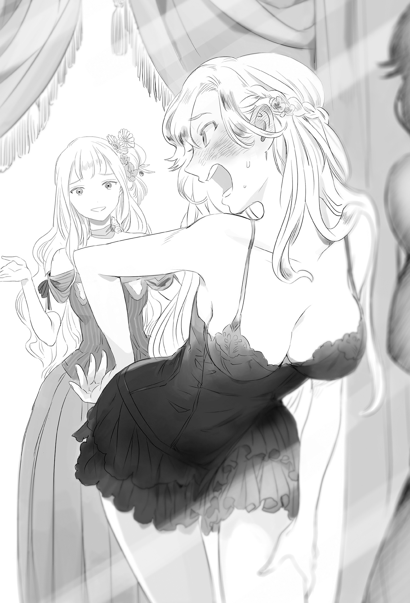
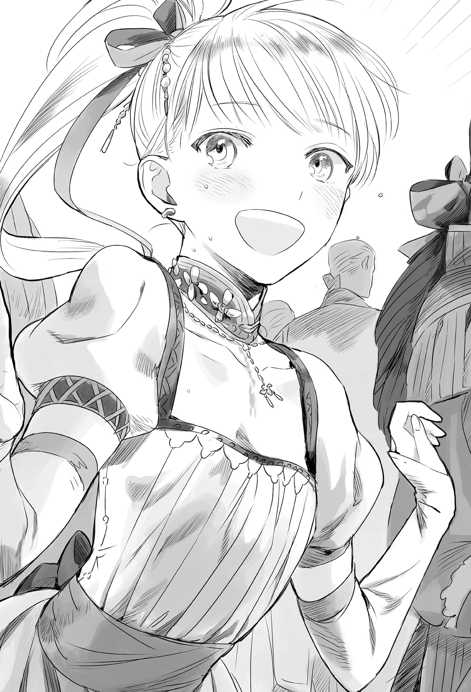
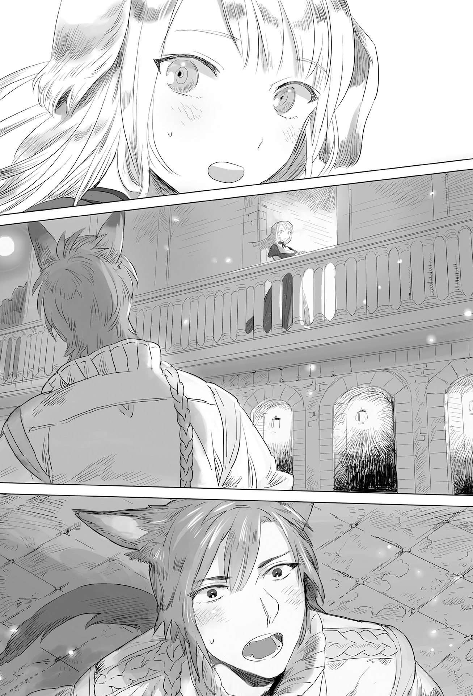

Chapter 2 – At the Victory Celebration
.
Part 1
Nordland Empire was located north to Mauricia Kingdom. It was a military country that rivaled Haurelia.
There were a lot of mountain districts in their territory. The temperature was also low, so the level of the agricultural production there was low. In exchange the mining industry, forestry, and manufacturing industry there were developed.
It had a hostile relationship for many years with its neighbor Gartlake Kingdom. Even now there were often skirmishes concerning Lefthoas(レフトアース) Mine that was located at the border.
The first king Ivan declared himself an emperor to liken himself with the founder of the dynasty that once united this whole continent.
In the past, there was a dynasty that united and ruled over the whole Aurelia continent. People in general thought of Answerer(アンサラー) Kingdom as the successor of this dynasty, but Ivan had a dream to unite the continent and entrusted that dream to his descendants.
Since then, uniting the continent became the national policy of Nordland Empire that had to be accomplished sometime in the future no matter how long it took.
「At this rate it will be father-in-law at Mauricia who accomplish the unification of the continent first won’t it?」
「There is no way father who can’t even occupy Haurelia Kingdom will be able to do something like that.」
The man’s lips curved in amusement at his wife’s curt reply.
「Occupying and ruling are similar but different. Father-in-law understand that very well.」
The name of this man who called Mauricia’s king Welkin as father-in-law was Gustav Adolf Nordland(グスタフ・アドルフ・ノルトランド).
He was the crown prince of Nordland Empire who turned 26 years old this year.
He truly looked like a young nobleman with his blond hair and blue eyes. His wide and muscular chest gave him the air of a military officer. His appearance was truly befitting for a royalty.
And then his wife’s name was Beatrice(ベアトリス).
She was Welkin’s eldest daughter. She had brown hair and reddish brown eyes just like the third daughter Margaret.
She had distinctive unyielding eyes that accurately represented her personality. Her extremely sensual and glamorous body style had captured the heart of her husband and kept him prisoner.
However her true nature was very different from her little sisters. Rather than inheriting the political cunning of her father, she had deeply inherited the dominating aura of a royalty.
「Even though we would have a way to make them owe us if only we didn’t simply wait-and-see!」
「Oi oi, no matter what you are just asking for the impossible if you are telling me to predict something like that.」
Nordland had the justification to send reinforcement to Mauricia because their crown prince was married to a princess of Mauricia. But the war was over while they were twiddling their thumbs and Nordland became unable to ask for any share of the benefit from the war.
Beatrice was persistently criticizing that.
However the difference of military strength between Mauricia and Haurelia was overwhelming and even some of the nobles within Mauricia were hindering the war effort. Nordland wasn’t such a philanthropic country that they would send reinforcement into a losing battle.
But seeing at the result, if they actually sent reinforcement then they might be able to grab one or two lands from Haurelia, however right now it was too late for that.
Welkin’s decision to swiftly strike a peace deal with Haurelia and acknowledged the legitimacy of the new king Jean truly showed how farsighted he was.
Thanks to that the surrounding countries including Nordland were stopped from trying anything against Haurelia.
They were pretending to not see anything while Mauricia was in disadvantage, so if they tried anything at this point of time, it was the same as turning both Haurelia and Mauricia to be their enemies.
「Beatrice, do you know anything about Count Baldr Antrim Cornelius, the hero of the war this time?」
「He was still seven years old when I married into this country you know? There is no way I know anything about him.」
「Fumu, the information that I received about him is really unbelievable.」
It was natural that he couldn’t believe the information that sounded completely like an epic heroic tale. However it was truly nasty because such fantasy-like events truly happened in reality.
「……I received a letter from my little sister Rachel. The content is similar with your information mixed with her going on and on about her sweetheart. I know that it’s hard to believe but there is no other choice but to believe it.」
「Hou……so her highness Rachel is infatuated with that man.」
「That girl is a devoted girl after all──I also can’t imagine that father will leave him alone.」
Although Rachel’s feeling also played a part, Baldr himself already had far too much worth to justify taking him into the royal family. There wasn’t any reason for Welkin to leave him alone.
「Interesting……I hope that he isn’t the kind of man that can be easily win over like that.」
.
Part 2
「……Baldr’s victory celebration huh.」
By all rights he wanted to go to the celebration at all costs, but Sanjuan Kingdom’s crown prince, Franco was barely able to suppress his desire.
Around ten days ago, his father King Carlos whose condition had been worsening for some time fell into a critical condition. Franco had to take the position of regent because of that.
He greatly wished to rush to the celebration for his best friend who he hadn’t met for a long time, but the situation didn’t allow him to do that.
「You can go you know, Teresa?」
「I am Sanjuan Kingdom’s crown princess. There is no way I can go back to my country while ignoring his majesty’s illness!」
In any world, it was considered unfortunate to be unable to meet the parent at the moment of their death. Teresa who now had become a member of Sanjuan’s royal family also wasn’t an exception.
「It’s just as you say, even so……」
Franco discerned the intention of Welkin about his political reason for holding a victory celebration at this timing. Displaying the intimacy of Sanjuan Kingdom with Mauricia Kingdom in this chance also wasn’t without the advantage for Sanjuan Kingdom itself.
「──It can’t be helped. I’ll ask Uncle Rodriguez and military minister Jose to represent us.」
Especially Jose, his relationship with Baldr was no different than a comrade-in-arms. He was a suitable person to be selected for showing the interaction between Sanjuan Kingdom’s navy and Baldr.
.
「WAAAAAAAAAAAAAAAAAIT, A SECOOOOOOOOOOOOND!」
.
There, a single woman rushed in like a storm──Majorca Kingdom’s navy minister, Urraca de Parma ferociously drew closer to Franco.
「I, I’m coming along too! If this is about Baldr then I’m not unrelated to him!」
Franco was making a greatly troubled expression. He stared resentfully at Queen Maria who was standing behind Urraca with a mischievous smile.
「Haha-ue, you leaked out this info to Urraca-dono of all people?」
「Nihehe……I have to support Urraca-chan’s love as her big sis♪」
Although there was a trace of exhaustion on Maria’s appearance from nursing Carlos all this time, her true personality was still going strong.
It was a public secret that Urraca who was famous for his jijicon fell in love with Baldr when he visited Sanjuan. It also included how Urraca’s fierce approaches also ended in complete failure.
Franco considered the misfortune of his best friend who was far away.
(Forgive me, Baldr. It doesn’t look like I can stop her……)
.
Part 3
The people of Mauricia were completely in the mood of celebration because the hostility with Haurelia that had been going on for more than a hundred years was settled for the time being.
Other than the victory celebration that would be held at the royal capital Cameron, various other festivities were also held. There was nobody who didn’t know about the saga of the war hero Baldr due to the performances of the minstrels.
「The city is in a truly festive mood.」
「……Even I had never experienced this kind of excitement during my time here.」
Beatrice answered somewhat excitedly while staring at the townscape of Cameron that she hadn’t seen for a long time while the carriage was shaking her body.
The city was displaying a bustling scene that deserved her surprise despite being someone who was raised in this country.
「……Your highness, I won’t be able to preserve your safety if you lean out too much.」
A knight with a stern bearing blocked Beatrice’s field of vision.
Hiding the dignitary from the gaze of the public was the basics of protecting VIP.
As expected there wouldn’t be any assassination attempt to Beatrice because this was her birthplace, but Nordland was in the middle of war with Gartlake even now. Furthermore they were travelling incognito into this country due to the wish of Gustav and others, so the danger wasn’t nonexistent.
「Ernst is really stiff. We aren’t traveling openly but, we have also contacted the palace of Mauricia. We have some people guarding us from the shadow even around here.」
The knight called Ernst bowed toward Gustav without a single change in his expression.
「This too is a knight’s duty.」
「It’s fine. I was the one who lacked maturity.」
Beatrice smiled cheerfully and elegantly leaned on the back of the chair. She herself didn’t hate the too straightforward personality of this knight.
Ernst Waldmann(エルンスト・バルトマン).
Despite his steel-like muscles, his limbs were long and he didn’t look sluggish at the slightest.
The large triangular and pointy ears on his head were conspicuous.
His hair with its silvery gray color was lustrous like velvet. Those with particular fetish would open their eyes wide seeing how splendid it was.
Ernst was a wolf beastman which was rare even among the dog-eared tribe. He was a knight who was ranked at the top five in Nordland Empire.
His rank as a knight still wasn’t that high, but he had expectation placed on top of him due to his talent to be someone who led the imperial guards at the future.
If there was anything to be criticized from him, it was that he wasn’t flexible and he wasn’t suited in communicating with other people.
Gustav thought that with Ernst’s caliber, he could be entrusted with the position as the imperial guard commander anytime If only he could become a bit more accustomed to acting in society. Although this overly serious side of Ernst was also what made him adorable.
The prejudice to the beastman at Nordland Empire wasn’t as heavy as Mauricia Kingdom, so a lot of beastmen were involved in the government even at the center of the country.
It wasn’t something so surprising. Actually 70% of all the dog-eared tribe that existed in this continent was gathered at Nordland. Nordland was a country that had beastmen occupying more than 30% of its population.
Rather it was only natural that they were appointed to positions of responsibility.
Gustav himself had a single beastwoman as concubine. That woman was also Ernst’s big sister, which was one of the reasons Gustav appointed Ernst to his current post.
「I can certainly feel the presence of Mauricia’s shadows, but they cannot really be relied on if someone like me can detect them.」
「It will be more problematic if there are a lot of shadows who can’t be detected even by you in Mauricia!」
What an awkward person, Gustav thought while shaking his head smilingly.
It was good to be humble, but Nordland’s martial prowess might get underrated if a fighter of Ernst’s level was acting too modestly.
「I’m still inexperienced.」
Beatrice tilted her head seeing Ernst who kept acting obstinately.
「Fuu……I wonder if even Ernst will soften up slightly after he settle down with a woman?」
Ernst was a prominent warrior even throughout Nordland. Although his look couldn’t be said as peerlessly handsome, he was still good looking enough. He was popular even among Beatrice’s maids.
Even a maid named Claudia who was Beatrice’s favorite maid was always carrying around Ernst’s bromide with her anywhere as though he was her idol.
Also as the crown prince’s favored retainer, it would be problematic if Ernst stayed single forever.
If possible they wanted a suitable woman to be his wife to take care of him.
「That talk is still too early for someone immature like me.」
This stoic attitude was what made Ernst’s popularity as high as it currently was, but the person himself had no interest at all in that regard.
「Bufuh!」
At that time, Gustav burst out laughing after being unable to hold it in anymore.
Ernst frowned because it was obviously him who was getting laughed at, but Gustav only chuckled further and spoke out some shocking words.
「Right you are. You’re going to go pick up the woman of your dream only after you become a splendid knight aren’t you?」
「Whaaaaaaaat?」
The man who put on a face that was like a cold and commanding expression without any opening in it was now turning bright red in fluster. This was the first time Gustav and Beatrice saw him like this.
「W-where did your highness……who in the world said that!」
「Dirk who came from the same town with you casually taught me that.」
「──That bastard! I’ll murder him later!」
Ernst was enraged and unusually displayed his emotion. Gustav burst into a loud laughter seeing that.
He never imagined that Ernst would show this kind of honest reaction.
The young knight who was making the hearts of many women throbbing in Nordland right now was actually so pure at heart like this. Who would believe it?
Even though he was a man who would be able to easily indulge himself with any beauty around him if only he himself wished for it.
「It’s unfair that I don’t know that! Tell me what is this about to me too, quickly!」
As expected, Beatrice was also a maiden. Her eyes sparkled at the prospect of learning about a love story of other people and she pestered her husband to tell her about it.
「Your highness Gustav……I’m begging you…….I’m begging you! Keep this secret until your grave!」
「I’m sorry. I too am unable to oppose my wife.」
It ended with Gustav mercilessly kicking aside Ernst’s wish.
「Mu, muguu……」
「It seems that when Ernst was still a kid, he asked a girl he was close with for her hand in marriage. Apparently he is still protecting that oath even now. However, it’s a bit problematic because he doesn’t even know where this girl is at right now.」’
「That’s no good! It will be a disaster if Ernst keep being single for his whole life because of something like that!」
She never thought that even the whereabouts of the woman was unknown.
If things didn’t go well, Ernst would end up living without allowing even a single woman getting close to him.
Even Beatrice knew enough that Ernst was a man who might seriously live like that.
「I don’t know if she still remember about it or even if she understand about it at that time. However we had sworn an oath to the beast god, so I will simply adhere to that oath.」
Ernst recalled the vestiges of the girl who he met at his younger days. Her childish and adorable looks had surely grown to be beautiful at this time.
He still had to be even more diligent to become a man who was worthy for her.
「……Give it up Beatrice. When he is like this then even quake or flood won’t move him. Fortunately he know her name, so if push comes to shove, I’ll simply mobilize the nation’s resource to find her.」
From anyone’s eye it looked like Ernst’s feeling was something one-sided. Gustav shrugged in exasperation seeing Ernst renewing his oath toward such woman. This was why he couldn’t bring himself to dislike Ernst.
「And……what is the name of this woman?」
Beatrice looked like she was still unable to fully accept it. Ernst told her the woman’s name with slightly embarrassed look.
「……Her name is, Selina.」
.
Part 4
「Aaaaaacchoooo!」
「Hyaaaaah! Selina-san! That’s nasty!」
Inside a carriage that was heading to the royal capital Cameron, Agatha who was sitting at the opposite side of Selina screamed at the sudden attack of saliva.
Seyruun who was taking care of Maggot remained behind at Antrim. So it was only the two of them who would participate in the victory celebration at Mauricia Palace as Baldr’s escorts.
Selina wanted to decline because she was a beastman, but Baldr obstinately refused to listen to her.
If there was anyone who treated Selina crudely, he wouldn’t hesitate to challenge that person to a duel.
Baldr hadn’t forgotten for even a moment how Selina and others cheered him up in the middle of war when he was about to break.
He didn’t intend to hold back his feeling toward them anymore no matter what it would do to his position.
「Did I catch a cold……I’m feelin’ shivers on my back.」
Selina hugged her shoulders and trembled as though he was feeling a chill. She felt puzzled because she felt like she had felt something like this before.
It was different from a cold. It was as though her sixth sense was telling her something.
If she remembered it right──.
「This is similar with what I felt when pops caused a mess.」
Selina’s father Massoud was a skilled merchant, at the same time he was also a man who would make a great blunder at the important time when it was about something else other than business.
The prime example of that was his death together with his wife Lilia.
He stood up when riding a boat on a lake and the boat capsized. He cooked and ended up with afro hair and browned face. There were still many other cases than that. Because of that before she knew it Selina’s instinctual sense of danger had become able to sense when her father messed up.
The chill just now felt similar with that.
「After passing away this long……what have ya done this time pops?」
Selina didn’t know. Selina herself had inherited a lot of the blood of that Massoud.
Baldr was simply too abnormal, but Selina herself also had the disposition to raise troublesome flags.
「I wonder why? I’m also getting a bad premonition……」
And then, there was no way Selina’s trouble wouldn’t affect Baldr.
Baldr felt resigned. At the same time he also hardened his resolve to face the troubles coming his way.
──*Shiver*
However it seemed that in spite of his resolve, another trouble was already dragging Baldr himself into it.
.
Part 5
「I heard that Rodriguez-dono is acquainted with Baldr’s mother?」
Rodriguez, the viceroy of Sanjuan Kingdom’s second biggest city Malaga was asked that by Urraca. He laughed cheerfully while recalling Maggot of the bygone days.
Now it was the nostalgic memory of his adolescent days in the past.
He wondered how that gallant goddess of the battlefield was doing. If possible he want to have a reunion with her, but unfortunately Maggot was in the middle of recuperation right now after giving birth.
Rodrigues suppressed down the secret disappointment inside himself.
「It was at a skirmish against Trystovy. She was truly like a demon god at the battlefield.」
The name of Silver Light Maggot had thundered throughout the continent at this time, but when she was staying at Sanjuan, she was known with the nickname of Muchacha Volante .
The figure of Maggot jumping from ship to ship was fantastical as though she was swimming in the air.
If Oka Sanai heard about it from inside Baldr, it would surely remind him of Minamoto no Yoshitsune’s Hassou Tobi .
Urraca nodded strongly when she heard of that anecdote.
「When someone fall into ocean, even a first class sailor has little hope of surviving. Jumping from ship to ship while there is battle going on is really a godly feat.」
It was nearly impossible to climb up a battleship from the sea with human strength. If no ally dropped down a cutter boat or throwing a lifeline to them, they would drown and die. That was the usual happening.
Furthermore ship sailed by catching wind. It was impossible to predict how the ship would move. No matter how absurd Maggot’s existence was, Urraca deeply understood just how impossible it was to perform a feat like her.
In that case her son Baldr too was──.
Urraca licked her lips bewitchingly. Rodriguez was unable to suppress the goosebumps on his skin that came from his instinctual fear.
This feeling was undoubtedly the same like when his wife Bianca cut off all path of escape and cornered him with no way out at all.
(B-Baldr-dono──run! Run away!)
It was only at this kind of case that man would be no different from a simple prey no matter how capable they were. Rodriguez who had the experience of being literally devoured by a woman who transformed into natural predator knew about it very well.
「U-Urraca-dono……I think you understand already but, I’m asking you to keep your action to moderation as a diplomat of our country.」
If he wasn’t careful, Urraca might give him a slip and crept into Baldr’s room at night, or she might went further and ambushed him from the shadow while the victory celebration was still going on……Rodriguez gave Urraca a warning while breaking into cold sweat when he imagined that such recklessness might occur.
「Don’t worry, I won’t cause any trouble for you. Many people are even saying that my behavior have been getting better lately.」
Urraca intentionally didn’t say that she wouldn’t do anything. As expected, she was absolutely planning to push down Baldr.
Rodriguez stared resentfully at Jose who was sound asleep by himself inside the carriage.
Jose who was worried that the travel would be filled with anxiety had taken sleep medicine beforehand to have a peaceful dream. It was a brilliant danger avoidance that didn’t put any shame to his title as a resourceful general.
Though it was a different matter if it was asked whether that was something proper for a human to do or not.
.
Part 6
「H~~~~~m……I’m lost. It will also be annoying if he see me as too mature……」
Rachel was glaring at her body that was reflected on the mirror with a seriously worrying expression.
Her body proportion was splendid. They were round and fleshy where they should be round and fleshy and slim where it should be slim.
However as a royalty, she was considered as having passed her prime now that she had turned 18. There was a concern that soon people would talk of her as someone who missed her chance to marry.
It worried Rachel a lot that she was older than the man she loved. It was a complex of her.
「I have to make an appeal properly today……」
What was unexpected for Rachel was how Silk went into attack to Baldr without considering her own station.
Silk was the only daughter of Randolph House that was one of the ten great nobles. Baldr was also the only son of Cornelius House. The obstacles for the two of them to be together were too numerous.
However two children had just been born into Cornelius house. Not only that, Silk herself took an initiative to surpass such obstacles and leaped on Baldr’s chest. It was a shock for Rachel.
She suddenly got an idea and tried making an erotic pose in front of the mirror. Doing that made her turned red even though there was nobody else inside the room.
It felt like she would die from shame if Baldr saw her doing something like this.
「……Nee-sama, it might be fine to try posing with a dress, but as expected, it’s overdoing it to try posing in only your underwear.」
「KYAAAAAAAAAAAAAAAAAAAAAAAAAAAAAAA!!!」

Rachel screamed when the voice of her little sister Margaret suddenly spoke to her when she believed that there was no one with her.
「You saw? You saw just now? Since when?」
「Since Nee-sama leaned forward and pushed out your chest I think.」
「NOOOOOOOOOOOOO! I’m begging you forget what you saw!」
Rachel’s shriek was piercing the ears. The maids hurriedly came and knocked at the door in panic.
「Your highness! Is something the matter?」
「I-It’s nothing! Leave us!」
「H-however there was a scream just now……」
「It was only Margaret teasing me! It’s fine, just leave us!」
Rachel who was still in her underwear forcefully ordered the concerned maids to leave. She was extremely embarrassed to allow them to see her room where underwear and dresses were scattered everywhere.
「……Even so, black huh……」
「I’m begging you just leave me alone!」
Rachel who simply believed that it should be black when it came to “lucky” underwear.
「It looks good, it looks good but, just what is Nee-sama planning to do to Baldr-sama at the party?」
「If you’re paying attention to the unseen places, then the sex appeal that ooze out from the inside will be different. Okaa-sama said that……」
Margaret held her head in her hands when she heard that answer.
Okaa-sama, what are you teaching to your daughter? Well, it wasn’t like she couldn’t understand her mother’s feeling who wanted to fuss over Rachel when seeing her worrying like this.
「There are many guests from other country in the party tonight, so please remember to not run wild no matter what.」
「I, I know that!」
Rachel cheeks puffed up while she quickly worn her everyday clothes.
Although it was with her little sister, having a conversation in her underwear was embarrassing. However her dissatisfaction ended there.
「──Nee-sama, your waist has slimmed down even more hasn’t it?」
「Ufufu……you notice?」
Rachel puffed up with satisfaction when Margaret pointed out the proof of her effort.
Her hard work in limiting her meal and diligently performing the exercise that her mother taught her had certainly shown result from Rachel’s proportion.
Margaret was amazed by her big sister’s drastic transformation.
Even Margaret who was considering snatching away the man that her big sister liked had to reconsider after seeing this display of straightforward affection.
Nine out of ten of royalty’s marriage was simply political maneuver, but she felt slightly envious at her big sister who looked like she would have her maidenly dream came true.
Margaret who strongly inherited the blood of their father didn’t harbor a romantic dream as strongly as Rachel.
「Even so Baldr-sama is also surprising. I never thought that he would be able to become a good match for Nee-sama this quickly.」
She thought that Baldr would need at least two years until he showed result as Viscount Antrim. Rachel’s age would be over 20 in that case.
Rachel’s eyes squinted fondly as though it was herself who got praised. She showed a bright smile.
「It’s amazing! Really amazing! He is the hero of Mauricia Kingdom!」
Any female surely had dreamed of a prince on white horse.
If the man she liked was someone who once saved her life and also a hero who defeated their sworn enemy the Haurelia Kingdom, it couldn’t be helped for a girl to be in high spirits like this.
「I can understand Nee-sama’s feeling, but you will have to grasp Baldr-sama’s feeling first before thinking of anything else.」
「Hauu……」
Rachel immediately turned fainthearted when Margaret hit at where it was hurt. Her eyes turned tearful.
To be honest, Silk’s decisive and bold action was an extremely heavy pressure on Rachel.
Rachel was a royalty and she lacked any capability in battlefield. So there was nothing she could do except waiting in a safe place, even so somewhere in her heart she felt like she had lost against Silk as a woman.
Also unlike with commoners like Seyruun and Selina, it would be difficult to marry both Silk and Rachel at the same time due to the kingdom’s custom.
She never thought that the only daughter of Randolph House would take such rash action──.
「Come on, don’t cry like that! There are still other obstacles on Nee-sama’s way! You don’t have any time to feel down just from this much!」
Margaret gently caressed the head of the tearful Rachel while questioning in her mind which one of them was the big sister here.
It was just as Margaret said, the problems that had to be solved in order for Rachel and Baldr to marry was as complicated as the case with Silk.
Baldr had certainly accomplished a feat that was unparalleled in history, but even now many people were still arguing of how such achievement had to be evaluated.
At the very least there were still many people, especially the conservative nobles who thought that the accomplishment still wasn’t enough for Baldr to marry a princess like Rachel.
「Fuu……if it’s Beatrice-neesama, she will make her own wish a reality no matter what kind of method she have to use.」
Rachel smiled powerlessly when she recalled the cutthroat maneuvering of their eldest sister Beatrice in the royal court.
She didn’t think that she would be able to scheme like that sister of hers.
Four years ago, two marriage proposals were prepared for Mauricia’s first princess Beatrice.
One was with the major military country Nordland at the north. The other one was with Answerer Kingdom that was the biggest and most powerful country in the continent and considered as the successor of the unification dynasty.
All sides agreed that Answerer Kingdom was superior in both national status and influence.
For Mauricia Kingdom too, if it was asked which nation would be better for them to have a relationship with, the answer would be Answerer Kingdom that boasted wider territory and sphere of commerce.
But.
Beatrice had exchanged letters with Nordland Empire’s crown prince Gustav using some kind of unknown intermediary. She then resolutely performed political maneuvers in the royal court.
First Beatrice succeeded to win over Randolph House and Trystovy nobles that took refuge in Mauricia to come to her side. They were in antagonistic relationship with Answerer Kingdom due to their stance against Trystovy Dukedom.
Answerer Kingdom was also playing part in instigating the civil war at Trystovy from the shadow. For these nobles who were aiming to recapture their homeland, Answerer Kingdom was a thorn at their side.
And then Beatrice enticed Prime Minister Harold who was aggressively pursuing to use the mineral resources of Nordland Empire to be her ally. The result was decided with that.
Beatrice succeeded in marrying her sweetheart using her own resolve and political strength.
Rachel remembered Welkin’s twitching smile when he sent off his daughter like it happened only yesterday. She would be troubled if she was asked to do the same thing like that.
In the end, what could she possibly do for her to be married with Baldr?
A reserved knocking of a maid broke the silence.
「Your highness Rachel, Baron August Richmond(オーガスト・リッチモンド) has come for a courtesy visit……」
Rachel’s face scowled darkly.
It was the man who he didn’t want to meet the most right now.
「──Please ask him to wait at the garden.」
.
Rachel wore a slightly plain attire that wasn’t to her liking. She called out to August who was enjoying a cup of tea calmly while sitting on a chair at the garden.
「I have made you waited, August-sama. Can I ask what is your business today?」
「I don’t really have any pressing business here. But if forced to say, I came here in order to catch a glimpse of your highness’s countenance today.」
Don’t come here with such trivial reason! Unable to say that, Rachel warded off that statement with a vague smile.
August Richmond was the eldest son of Adolf Richmond, a prominent member of the ten great nobles. He was the man who would inherit Richmond House at the future.
That was why Rachel too was unable to treat him rudely.
「Your highness’s beauty has become even more polished. Is it permitted for me to be conceited in assuming that your highness has prettied up yourself for me?」
Rachel pretended to not notice even though she had guessed August’s true motive.
「I wonder what could you possibly mean? Aa, soon I’m going to meet with Beatrice-neesama after so long, so perhaps I got carried away because of that.」
(Don’t speak nonsense! I’ve been prettying up myself not for you but for Baldr-sama!)
Her effort wasn’t to obtain praise from August in the slightest.
「Beatrice-sama is also coming back after so long. I pray that your highness Rachel won’t leave this country like her. This country will lose its irreplaceable beautiful flower like that.」
「Ufufu……but in her letters Nee-sama is always writing of how happy she is you know?」
Rachel implicityly hinted that marrying to other country wouldn’t be a bad choice for her. It was to make August realized that he had no hope at all with her.
However August too wasn’t so simple of a man that he would give up just from that.
「Your highness won’t be able to understand what your husband might possibly think inside their heart if they are a royalty from other country. There was also that crown prince who played around despite being partnered with a princess of other country.」
The late Prince Abrego of Sanjuan Kingdom was someone of loose morals and repeatedly played with other woman secretly from his fiancée Rachel.
Indeed, certainly it might be just like August said, but she wished that he would say those words before her engagement with Abrego was decided.
Those words left no impression at all in Rachel’s heart even if he said that those words after this late.
Compared to those empty words, the words of Baldr 「I will absolutely save you」 when she was a step away from the abyss of death due to the epidemic was a pick-up line that surpassed ten thousand words.
「Is August-sama saying, that not all gentlemen are like that?」
A slight irritation crept into Rachel’s voice when she recalled the many beautiful girls who gathered around Baldr.
August panicked from thinking that he had carelessly stepped on a landmine and made an explanation.
「That’s preposterous! This August only has one woman in my eyes, no other woman can possibly enter my line of sight!」
「Oh, I’m not trying to criticize August-sama you know? I at least understand that there is no gentleman who doesn’t even a single concubine.」
Ignis and Maggot were a precious exception. Normally, a noble would have several concubines other than his legal wife. It was because they prioritized the continuation of their family lineage more than anything.
「H-however, if possible I want to continue loving just a single woman.」
「I see. I don’t know that August-sama is a romanticist.」
Rachel smiled sweetly, in contrast August made an awkward dry smile.
It became unclear which of them was the older one here.
August’s experience with woman wasn’t few by any means, but as the eldest son of a duke house, his experience of coming into contact with a girl of higher status was nonexistent.
Normally he was interacting with a girl from higher position with his social standing and riches giving him a boost, so seeing Rachel who wouldn’t go along with his honeyed words at all was fanning up the irritation in his heart.
「……Please forgive this sudden visit of mine. I’m looking forward to the victory celebration tonight. I hope that your highness will be so gracious to accompany me for a dance at that time.」
「But of course.」
Before he left, August courteously kissed the back of Rachel’s hand.
However Rachel didn’t look flustered at all. August was vexed by that and told her this for revenge.
「Come to think of it, I heard the rumor that the daughter of Randolph House is infatuated with the hero of Antrim. I wish that I can be in his position.」
Rachel felt like a drill was gouging into her heart, but she hid her reaction completely with a surprising self-control.
It was because she spited August too much to show any agitation to him.
「Then let’s meet again later at the victory celebration.」
.
「What a troublesome woman. Even though she is just a second hand old spinster.」
August who seemed like he was gracefully leaving didn’t hide his irritation at Rachel’s stubbornness.
August himself thought that there wouldn’t be any benefit even if he married the second hand second princess. Rather it only increased his burden and worry that he had to pay attention to his attitude when dealing with a royalty.
If it wasn’t because the order from his father, he wouldn’t even get close to her.
All of this was that guy’s fault──.
「Something like hero is unnecessary in any country. He should learn his standing and disappears already.」
It was said that a hero appeared when the country was in chaos.
For a youth with bright prospect like him who would shoulder this country in the future from within the bureaucracy structure that was finally maturing, a hero that appeared out of nowhere was nothing but a hindrance.
.
Part 7
Answerer Kingdom.
They self-acknowledged themselves as the successor of the unification dynasty. They possessed the largest territory, population, and military strength in the continent. They were a nation that was worthy for the title of the strongest.
Nedras Kingdom and Grand Duchy of Tenedora(テネドラ) were essentially their vassal state already after the two countries were forced to adopt Answerer’s princes into their royal family. Their influences were famed to be unparalleled.
However the king of Answerer Kingdom, Alexei III(アレクセイ三世) accurately discerned that the situation of the world was changing before he knew it.
「I never imagined that Haurelia would lose this easily.」
War between countries would become a war of attrition as long as no side made a fatal blunder.
The power of major countries like Mauricia and Haurelia declining because of war should be beneficial for Answerer Kingdom.
And yet when the lid was opened, Haurelia suffered a complete defeat from a trifling tiny territory like Antrim and now they were essentially reduced into Mauricia’s vassal state.
In addition Sanjuan Kingdom was contributing to this victory. If this military alliance was turned toward Trystovy next, the title of the strongest in the continent would belong to Mauricia.
As the successor of the unification dynasty that ruled over the whole area at the northwest of the continent, Answerer Kingdom absolutely couldn’t allow that.
「Mauricia is also involved in the recent strengthening of Sanjuan Kingdom’s navy. This has become a bit troubling.」
The one who said that was Alexei’s son and the crown prince, Piotr(ピョートル).
Answerer Kingdom was also self-acknowledged as the strongest in the continent when it came to navy, but it wasn’t to the degree that they were able to exert their influence until further east from Trystovy.
In case Sanjuan Kingdom and Majorca Kingdom concentrated their effort together and a battle occurred at the south seas, with how far the campaign would take, the possibility of Answerer Kingdom’s navy winning that battle was small.
For Answerer Kingdom that had been making use of the threat of their outstanding military strength to exert their political influence to the whole continent, this situation wasn’t something that they could overlook.
「We must not allow Trystovy to fall to Mauricia’s hand.」
Even if the gap between the two countries were shortened, as long as Trsytovy wasn’t taken away then Answerer Kingdom’s superiority would be unshakeable.
Then how should they eliminate Mauricia’s attempt to Trystovy?
「Should we dispatch our army to occupy Trystovy first?」
「We don’t have any just cause for that. We will lose more than what we obtain by doing that.」
Civil war that was like a quagmire was continuing even now at Trystovy. Actually it wouldn’t be that difficult to occupy the country that was in such state.
However if they put their hand into that uncontrollable chaos where it was impossible to even define who was ally or enemy, only serious injury would be waiting for them.
Even Nedras Kingdom that Answerer Kingdom had practically hijacked was currently filled with terrorism actions by underground organization running rampant in it. Alexei had learned from experience how much time and effort would be needed until Answerer Kingdom’s rule would settle down in that country.
「Then as expected, we can only deprive the just cause from Mauricia.」
Piotr eloquently stated as though he had understood that his father would refuse his first suggestion.
「Hmph, so you know already.」
「I only know that the prime minister’s subordinate has made contact with Trystovy’s archduke.」
Answerer Kingdom was the strongest nation in the continent. Naturally the king who ruled such country also had to be the strongest existence.
Alexei was satisfied that his son had properly inherited his own blood.
「We won’t hand over Trystovy that easily……however what is concerning here is……」
「Viscount Antrim isn’t it?」
「Umu……if only that man wasn’t there, the war with Haurelia would greatly damaged both countries──and it would become just like I expected. We can’t let our guard down against that man.」
Both countries hadn’t noticed but, many nobles in Mauricia and Haurelia were actively pushing for war because Answerer Kingdom was secretly giving them a push from behind the scene.
Their objective was to sell favor to Mauricia later on by mediating peace between both countries after they were exhausted. By doing that Answerer Kingdom could obtain political advantage to make Mauricia consider allowing them to annex Trystovy in the future.
This kind of maneuver was something that any major country was doing. It was nothing more than one of the countless schemes that they had ongoing, but the result was completely the opposite of what they expected.
「We are only hearing rumors that sounds like fairy-tale about this man. Our decision will be mistaken if we are unable to obtain accurate information about him.」
「Is that really true, Chichi-ue?」
Piotr felt suspicious because the information that he obtained from his subordinate and the information that his father had were completely the same.
「Perhaps the rumors are actually all true. Or rather, the possibility of that might be higher seeing that there is no information about him to this degree.」
「Are you saying that the information of him burning tens of thousands of people in hell fire or burying an army alive by breaking a mountain are not fairy tale?」
「Setting aside the question of how he can do something like that, the phenomenon themselves are actually something that exist in reality.」
And above all else, such information didn’t only come from Mauricia that was in the victorious side. Similar information also came from Haurelia.
In that case, it was only logical for them to first accept those information as fact and then thought up of the countermeasure.
「──It’s not amusing. This is really not amusing.」
Alexei snorted in discontent.
A single man who could still be called a boy from a remote territory that wasn’t worth any consideration was making the strongest king in the continent to worry his head off.
That kind of foolishness was unacceptable.
「However it’s not like there is nothing that we can do. My concern is that the strength of Viscount Antrim will spread to the whole Mauricia.」
If this mysterious power belonged to Baldr alone, they could prepare as much countermeasure as they wished.
The most terrifying development was if this power left Baldr’s hand and propagated to the whole Mauricia.
「I see, the enemy of the enemy is an ally huh.」
「First it’s essential to increase the number of that man’s enemies.」
A hero who raised too much achievements would be avoided and hindered by their allies. There were many of such stories.
In addition sometimes a hero’s destiny wouldn’t end up in happiness. As statesman, the two of them knew that fact very well.
Even the king of beasts like lion would be helpless before a single bit of a poisonous snake.
.
Part 8
It had been a long time since they visited the royal capital Cameron. The activities in the capital presented an unprecedented liveliness with ceremonial orchestras’ performance, the patrolling soldiers, and also the invitees from many countries filling the city.
Baldr unconsciously narrowed his eyes at the bright and festive atmosphere.
「It’s like there is a festival.」
「That’s just how much everyone felt threatened by Haurelia.」
Agatha spoke chidingly at Baldr. When war broke out between countries, the peasants would also get conscripted and became another victim in the war.
Agatha thought that Baldr was lacking in self-awareness about how unreal his achievement was.
.
The other day, there was a messenger from Agatha’s family, the house of Baronet Mileton asking for help without any care of appearance.
The inheritance rights of Agatha who was once driven out from Mileton House would be recognized once more.
They would also apologize as much as needed. If it was necessary they would also give the full authority of the house’s management to Agatha.
That was why please help mediating matters with his majesty the king. Please gave a testimony that they weren’t involved at all with the faction of Duke Beaufort.
It was a tearful pleading that she couldn’t imagine at all coming from her arrogant big brother Hayne.
From what she heard from the messenger, everything other than the mansion in his territory had been impounded for paying the debts. Right now he was surviving in poverty after selling off all of the household belongings.
Most of the retainers had been fired. Only the butler who had served the house for many years was remaining.
Agatha wanted to flatly reject the completely shameless and impertinent request. However Baldr stopped her from doing that.
「If he surrender the family headship, not just the family control, I shall grant him some money that will allow him to at least live modestly.」
「My lord! You don’t have any duty to do something like that!」
Even though they weren’t aware of it, it was an undeniable fact that Mileton House had taken part in the attempt to trap Antrim House.
Agatha couldn’t understand why they had to help out such house.
「I don’t want the nobles who opposed us think that we’re still holding grudge. I think this is just the right opportunity to be used as propaganda material.」
Baldr understood that his achievements were too great.
A hero would make too many enemies if he wasn’t humble.
Although Agatha had severed ties with her family, if it was known that Baldr didn’t do anything to help the biological family of his fiancée, the nobles who were passively hindering Baldr at the war would get scared or even hostile toward him.
Also Agatha would give birth to a child of her own one day. It wouldn’t be a bad option for that child to have the option of succeeding the Mileton House.
「However tell him in no uncertain term, that we have no intention to give him any further concession.」
「I’m deeply grateful for my lord viscount’s mercy.」
Mileton House’s butler said that and bowed deeply.
No matter what kind of ulterior motive they had, Baldr’s suggestion could only be taken as good news for Milethon House that was just a step away from ruin.
After that Hayne was enraged by the suggestion to concede the position of house head, but he had no other option.
He had no prospect of paying back the debts. The earnings that were produced from his territory had been seized. The only source of nourishment for his livelihood came from the pension he received as a former knight.
However the pension of a knight was negligible. It was completely insufficient to maintain a moderately large mansion.
Hayne was also completely isolated in the noble society. In the end he realized that he had no other choice than to accept Baldr’s suggestion.
Like this Agatha inherited the title of Baronet Mileton.
.
Baldr found a crowd that was conspicuously large even within the bustling city of Cameron. He made a troubled smile seeing that.
「I already heard that it got popular, but to think that it’s to this level……」
The stylish signboard that was decorated with white birch and flower was eye-catching. Over there was the main store of Olive Brown Café that had quickly opened their third branch store recently.
Olive Brown Café was using the recipes that Baldr prepared like castella or mayonnaise that was using cheaply priced sugar. Their menu attracted the public’s attention. Coupled with Tyron’s genius skill as a pastry chef, there was a planning in the work to open a chain store until even the faraway Sanjuan Kingdom.
Furthermore recently the hot topic that created a large stir in Cameron was cooking using honey.
Honey couldn’t be cultivated like sugarcane, so it was considered as even more of a high-class item than sugar.
To be able to enjoy pound cake and tea that used that honey abundantly with a cheap price caused customers to gather from every corner of Mauricia. It was an unexpected repercussion even for Baldr who sold honey wholesale to Olive Brown Café after his experiment in beekeeping at Antrim succeeded for the time being.
It was said that honey was the sweetest thing in the natural world. It was also called as the king of sweetness.
Honey had made its entrance in mankind’s history since from very ancient time at earth. The method of beekeeping was developed very lately at the end of the 19 th century.
Until then there was no way to obtain honey other than destroying the beehive, and so it was thought to be impossible to breed honeybee continuously.
At the end of 19 th century, someone invented a beehive that was equipped with removable hive frame. It allowed the establishment of modern beekeeping. The inventor’s name was Lorenzo Langstroth. The method of beekeeping continued since then without any fundamental change in it.
Honeybees had the habit of gathering in one place and collected honey from there, because of that it was also possible to limit the type of flower they gathered the honey from. Antrim honey that was gathered from Chinese milk vetch and clover was accepted by public with great popularity.
At this rate Baldr would have to instruct the increase of production.
「──Is my lord perhaps Viscount Antrim-sama?」
A girl wearing an apron that was colored olive brown and a uniform that was added with an accent of white and red lines addressed Baldr timidly.
It seemed she had been waiting all this time for Baldr’s arrival since some time ago.
Her blonde hair that was cut in bob cut style and her pure white hair band suited her really well. She was a beautiful girl with well ordered facial features.
If Seyruun was here, she might felt a sense of rivalry with her.
「Yeah, the place is really thriving isn’t it?」
「Yes-! Olive Brown Café is always full-!」
The girl happily explained with clenched fists as though she was talking about herself. She looked so adorable that Baldr unconsciously wanted to pat her head.
She was undoubtedly the poster girl of the café.
「Please enter from the staff entrance over here. The head chef has been waiting since yesterday.」
The girl guided Baldr and his group to the door that was used for the café’s employers to go in and out. Then she suddenly recalled something and smiled.
「What’s the matter?」
「No, the head chef who is usually so strict is looking very nervous, happy, and also excited so……pardon me but, my name is Brenda. It’s an honor to be my lord’s acquaintance.」
Brenda smiled like a blooming flower.
「……It’s fine if he don’t run wild and trouble the customers again.」
Using the owner’s privilege, Baldr and his group didn’t join the long line of the general customers and they were shown into the personal room of Tyron that was located at the back of the kitchen.
「Baldr-sama! I’ve been waiting!」
Tyron’s portly and tall body bent down for 90 degree. Then he took Baldr’s hand tearfully.
He was acting exaggerated like usual. His worshipful attitude to Baldr still hadn’t changed.
「The story is amazingly crowded. I heard that there was also a request from Nordland to open a branch café there this time.」
「It’s all thanks to Baldr-sama. I’ll have to give my disciples a kick at the butt even more from here on to keep up with the demand!」
Tyron’s nose twitched. He didn’t look as dissatisfied as he would have others believe.
At the very least he had the confidence that there wasn’t anybody else who could realize the cooking idea of Baldr as accurately as him.
「Even so, I can’t believe that honey of such quality can be produced so cheaply. This Tyron has his eyes opened even further by Baldr-sama once again!」
It felt like Tyron was going to hug him even now. Baldr smiled wryly while feeling slightly put off with the prospect of receiving a hug from a middle-aged man.
「We are still in the experimental stage, but the prospect is bright that we will be able to increase the amount. By the way, about the thing that I requested from the head chef the other day……」
Tyron was puffed up with pride and nodded as though he had been waiting for it.
「It’s my first time working on something like that, so I’m not satisfied with how it turned out but……I guarantee that it’ll still struck everyone with admiration.」
He had been shocked by Baldr many times until now, but never had he felt as moved as this time.
Tyron thanked god for the fortune that he was blessed with for him to be able to be in his position right now.
「Please come take a look. This is the confectionary that I created with all my might, the Pastillage!」
.
Part 9
The banquet of victory celebration that was held at Cameron’s palace rode on the momentum and it was prepared with lavish preparation to be worthy to symbolize Mauricia Kingdom.
The citizens would be treated with a grand amount of alcohol and food for free at the big day, but Mauricia had the national power to treat expenses of that level as though it was nothing.
Minstrels that were gathered from all over the country sang the poem of Antrim’s victory with their harp in hand at the street corner’s plaza. The citizens were drunk in the epic poem of hero that they spin.
「I’m not such convenient hero though……」
The heroic tale described him like an infallible saint that god brought to bring salvation to the people. Baldr only felt embarrassment from hearing that.
The result of that battle came from succession of errors of both ally and enemy. If the enemy wasn’t thrown into chaos then he was confident that it would be him who was defeated without a doubt.
To speak of it in the extreme, Baldr would be nothing more than a weak feudal lord without the knowledge from his previous lives.
「No, Baldr-sama is undoubtedly a hero.」
Agatha smiled bewitchingly in her red dress that was wrapped around her body.
The voluptuous chest part was exposed boldly. It was a suggestive design, but it had plenty of white frills decorating it that coupled with Agatha’s petite body, the dress emphasized her loveliness instead.
Baldr severed the attractiveness he felt toward the deep valley of her breasts with reluctance and averted his gaze.
Agatha felt her womanly pride satisfied seeing the conflict that Baldr was feeling.
「A hero doesn’t introduce themselves as one, it’s the people around them who give that title as they please. It’s not a problem whether that person is actually really a hero or not.」
No matter how unsightly the actual process was, even if he was actually asking for help in his heart throughout all of it, the masses saw the illusion of a hero from the young man who brought about the victory.
「Besides, Baldr was really cool when ya tried to protect all of us. That’s enough ain’t it?」
「My, Selina-san snatched up the best part from me.」
Selina and Agatha looked at each other and chuckled.
Perhaps they had good affinity with each other due to their similar disposition as woman of character, the two of them suddenly got along well recently.
It was a good thing that his fellow wives got along well, but Baldr got the feeling that these two would think up terrifying things if they joined hands.
In that respect, Seyruun was just a girl without any power at all, so he wasn’t too worried about her. Although she knew all there was to know about Baldr’s past, so she was terrifying to him at different meaning.
.
「I’m Baldr Antrim Cornelius. The two with me are my fiancées.」
「I have received the instruction from his majesty. Please pass this way.」
When Baldr showed his face at the palace gate, the guard gave a bow with his utmost respect nervously.
It seemed the hero rumor had spread until the palace too.
Baldr wanted to hold his head in embarrassment because Welkin would surely use this to toy around with him while looking smug.
At the right side after entering the gate was an open space for parking the horse carriages. Dozens of carriages were already lined up there.
Baldr found a familiar face there and his expression brightened.
「Jose-dono, Rodriguez-dono! Long time no see!」
「Yaa, Baldr-dono. Thanks for all your help in the past.」
Jose greeted Baldr back with a cheerful smile. In contrast Rodriguez covered his face with his right hand as though it was a really bad timing for him.
「What’s the matter?」
「Sorry, Baldr-dono. His highness Franco and his highness Teresa asked me give you’re their earnest apologies.」
「Yes-?」
Just when he was about to ask what did he mean by that,
「Baldr! I wanted to meet you!」
「Whaa-!? Urraca!」
Urraca took Baldr by surprise and hugged him from behind. Baldr got into panic.
They weren’t at Sanjuan Kingdom. Furthermore Selina and Agatha were right beside him.
As expected, when he fearfully turned toward them, he found the eyebrows of Selina and Agatha lifted up until beyond the limit.
「I’ll listen if ya have any excuse.」
「Though you won’t be forgiven no matter what is your excuse.」
「No, at least forgive me!」
Urraca didn’t give a damn to Baldr’s predicament and pressed her voluptuous breasts to Baldr’s arm.
Selina and Agatha were also voluptuous enough, but they weren’t a match of Urraca’s tall and trained figure coupled with her springy huge breasts. Her fleshiness and springiness were staggering in proportion of her tall build.
Urraca and Selina plus Agatha analyzed each other’s assets and glared at each other with Baldr in between.
However, that rivalry only lasted for a brief moment.
Urraca laughed boldly and released Baldr’s arm before she threw out her chest haughtily.
「──I still need to prepare for the banquet, so I shall withdraw for now.」
「Eh?」
The unexpected understanding of Urraca made not only Baldr but even Rodriguez to raise their voice in surprise.
「What? Are you two thinking of me as that selfish of a woman?」
(You came here until Mauricia even though you aren’t even invited, and you call yourself as not selfish?)
Rodriguez nearly launched that retort, but he barely caught himself and swallowed back those words.
Actually Urraca herself was also surprised by how indifferent she was feeling.
(Baldr──has he changed a little?)
Urraca who became a jijicon from her love toward her grandfather had instinctually sensed the change in Baldr.
Sanai had never tried to wake up anymore inside Baldr since the war of Antrim was over.
One day his war loving blood might boil up and wake him up once more, but since Sanai had fully realized that there was no battlefield for him in this world, the possibility of Sanai and Urraca reuniting might be low.
Even so, Baldr had definitely inherited Sanai’s knowledge and experience. There was no way that Urraca would lose interest to Baldr just because of this.
「Aa, Baldr-dono, we have found this shell-like thing that you mentioned previously, so please come to Sanjuan if you have time.」
「──I see. I hope that I will be able to come visit soon if that’s the case.」
「His highness Franco is also very interested in it──I can’t help but feel disappointed that Baldr-dono isn’t a subject of our country.」
The thing that Baldr asked Jose to investigate through Franco was the silver-lipped pearl oyster.
Generally it was Akoya pearl oyster that was used at Japan, but silver-lipped pearl oyster had big enough size and also faster growth. This was the pearl oyster that was used at places like Australia for pearl aquaculture.
In other words, Baldr was suggesting the cultivation of pearl.
Pearl was a famous jewel even at earth, but unlike diamond or ruby, pearl would oxidize along with the passage of time and lost its luster.
Which meant that there would be demand to buy new pearl for replacement. In that respect pearl was extremely profitable.
If the aquaculture smoothly succeeded, the market scale of the product would rival the budget of a small country.
It was only natural for Franco to hold great expectation from it. It was a project that might even influence the nation’s strategy if one wasn’t careful.
「The experimental voyage of the ocean-going ship that is equipped with compass is also starting at the south seas. I also want to go with them if only I’m a bit younger.」
「No matter what, it’s impossible for the military minister to personally go isn’t it?」
「Even though I look like this, I’m a sailor at heart, so it’s painful to stay on land while being surrounded by paperwork.」
Jose cackled brightly.
「I heard that you sir did nothing but running away while pushing your work to subordinates though.」
Rodriguez rebuked at Jose as though to take revenge for his abandonment of him during the journey in the carriage, but the person in question showed no sign of minding it at all.
「I’ve finally get promoted to the top after much effort, so please spare me for at least that much.」
The man who was once feared as the Demon of Lepanto was now given a dishonorable nickname like The Escapee Jose. Even so his subordinates knew very well how reliable he would be when push came to shove.
Perhaps this was Jose’s own unique way of leading.
.
「Well well, so the hero has arrived.」
A young man appeared at that place along with a slightly thorny voice at that timing.
「This must have been the first time we met. My name is August Richmond. It an honor to make your acquaintance.」
「──I’m Baldr Antrim Cornelius. The honor is mine.」
Baldr raised his guard because he felt August’s atmosphere that wasn’t too friendly.
After the end of the war, there were a lot of people who tried to make nice with him, but there were also a lot of people who harbored enmity toward him.
「I can’t help but be filled with admiration at your victory my good sir. Perhaps such a grand feat really ought to be called as a heroic tale.」
「No, the thing that I can do by myself really doesn’t amount to much.」
Then the corner of August’s lips lifted up as though he had obtained what he came for.
「What an astonishing clear sight for a hero. Exactly, even a hero is just a single human, naturally there is a limit to what he can do alone.」
It would be unbearable if a situation of a hero making a resolute decision and changed the world drastically happened frequently.
Hero was unnecessary in the daily life, it was none other than organizational capability that silently completed everyday affairs that was the driving force which moved the country. That was to say, the bureaucrat nobles like August and the others should be the one managing Mauricia Kingdom from here on.
「You sir seems to be someone sensible. You must know your own position aren’t you?」
August didn’t say it openly, but it was clear that he was demanding Baldr to turn down honor that was beyond his station.
What August wanted to learn was Baldr’s ambition.
If someone who had raised that much achievement seriously attempted to pursue his ambition, he would be able to aim as high as he wanted.
However feudal lord of rural territory tended to keep their distance away from the royal court that was filled with political strife. They knew well that political amateur from the countryside like them couldn’t possibly oppose the complicated power struggle within the royal court.
If Baldr didn’t overestimate his own capability because of his youth, it was possible enough that he would turn down the fame and promotion.
「──So in other words is it that? You can’t stomach seeing Baldr rising in the world?」
Urraca suddenly interrupted. That overly blunt sentence made August doubted his ears.
And then at the next moment a burning rage filled August’s brain.
Urraca’s words directly hit the painful spot that he want to hide the most.
「How dare you mock the heir of Richmond House like me!」
However even Richmond House of the ten great nobles that were unparalleled in Mauricia Kingdom wasn’t an existence that Urraca who lived at the southern sea at Majorca Kingdom ought to pay any mind to.
「Sorry but I have never heard that name before. Forget about that, the decision of rewarding or punishing someone is the domain of the country you know? There is a limit even in being stuck-up with someone like you trying to arbitrarily influence such matter.」
「……Who do you think you are……!」
August moved to grab Urraca’s collar, but Baldr easily stopped him by holding his shoulder.
He knew that there was not even a one in million chance of August harming Urraca, but he also didn’t wish to have violence displayed toward Urraca here. It wasn’t like he was worried for August’s wellbeing.
「There is a limit even in being impolite! You too Sir Baldr, don’t think that you will get off lightly from this!」
「It seems there is a misunderstanding at the fundamental level going on here, but it will be you sir who won’t get off lightly from this.」
Jose chuckled while scratching his head in exasperation.
However there was a light fury and scorn in his eyes.
「──What did you say?」
「Forgive me for the late introduction, I am Jose Liberiano. Currently I’m serving as the military minister of Sanjuan Kingdom. And this lady here is Urraca de Parma, the navy minister of Majorca Kingdom. There is not a single person alive in Marmara Sea who doesn’t know her name. Well, it seems you sir don’t know that name though.」
「Sa, Sanjuan Kingdom’s──!」
August jerked as though he was hit by lightning and turned speechless.
He never expected that the people casually chatting with Baldr were state guests from other countries.
Duke Richmond could throw their weight around within Mauricia Kingdom even if their action was forcing the limit, but even their influence didn’t reach as far as to foreign country.
If this matter developed into an international problem, it was possible that Richmond House could even lose their standing.
Within the power struggle in the royal court, three would always be anyone ready to drag down their rival if the chance presented itself. Even Richmond House wasn’t an exception.
「I-I have been impolite due to my ignorance……. I kindly ask that you sirs and lady can find it in your heart to be lenient with my lack of manner!」
Cold sweats drenched August’s back.
In the war this time, Sanjuan Kingdom had allowed Mauricia army to cross over their territory and even provided supplies for the troops.
If Jose mentioned that and used it as a ground to request for August’s punishment, even Welkin would find it hard to refuse.
Richmond House was well known within the country, but they almost had no connection at all with nobles of other country.
That was the limit of the bureaucrat noble August.
「Jose-dono, August-dono is the heir of Duke Richmond who is an authority in my country. I ask you to please be lenient to him too in this occasion.」
「If it’s Baldr-dono himself who ask that from me, then it can’t be helped.」
August seized this chance and lowered his head deeply toward Jose.
「Allow me to express my heartfelt gratitude for your magnanimity! If there is something that I might be of assistance, please don’t hesitate to contact me anytime.」
August had to finish striking the deal right away before Jose changed his mind.
Jose understood August’s thinking like it was the back of his own hand.
「Then, please lend your assistance to Baldr-dono in my place. We shall let the bygones be bygones with that.」
Jose’s smile was lacking any malice. However it caused August to want to spit inside his heart.
Matter of debt and favor like this had weight that couldn’t be underestimated within the noble society.
August had accurately discerned that Jose was intentionally making him indebted toward Baldr.
However August had no choice to refuse this.
August lowered his head toward Baldr with a heartrending grief.
「Thanks to your help, this matter is settled without it turning into something serious. I swear on Richmond House’s name that I shall never forget this debt.」
.
Part 10
A conspicuously extravagant horse carriage passed through the outer gate of royal capital Cameron.
The carriage was inlaid with plenty of gold and silver. The elaborate design clearly told of how the craftsman had made use of his skill in full to finish this carriage. Anyone who saw this carriage would have their eyeballs jumped out of their socket at how luxurious its craftsmanship was.
The large crest of sun and golden lion that decorated the carriage informed anyone watching that this was the carriage of Answerer Kingdom.
「It seems that this city has been developed even further compared to the last time I visited several years ago.」
「……It feels like I’m looking at Mulberry of the past. How enviable.」
Two men stared at the hustle and bustle of the capital from the window. In contrast with their smiling expression, their eyes were probing at the surrounding vigilantly.
The man at the prime of life whose hair had slightly turned bald from his forehead folded his arms moodily.
「A part of it is because their national power is practically unharmed at the war against Haurelia but……it’s impossible for the streets to be this bustling without considerable economic strength behind it……it’s truly an alarming matter of where this strength is going to be directed next.」
Mauricia’s hypothetical enemy had been Haurelia Kingdom for many years. Their military strength was also allotted to guard against attack from Haurelia.
Now that the pressure had disappeared, it was possible Mauricia Kingdom would turn its attention to Trystovy Dukedom next.
The man was saying that.
「It’s just as your excellency Prime Minister Marat said. I shall never forget your cooperation to insure the continuance of my country.」
「Don’t mind it. We too won’t be reluctant to lend our assistance so that your highness can ascend to the throne as quickly as possible.」
The prime minister of Answerer Kingdom, Marat smiled kindly. He looked like a good natured old man.
The youth before his eyes was a hidden card that he brought here in order to take the wind out of Mauricia’s sail.
Welkin was certainly an old fox that couldn’t be underestimated, but Marat too had the confidence that he wouldn’t fall behind when it came to scheming.
In this kind of scheming, dealing a psychological blow to the opponent would be advantageous for the negotiation.
The brazen attitude of Marat encouraged the youth and helped him recovered his composure.
「──I can’t wait to look at the flustered face of that Mauricia king.」
.
Part 11
「And, have you arranged a meeting with the hero?」
Gustav was shaken by the horse carriage while calmly talking to Eckart, the diplomat of Nordland Empire who was stationed at Cameron.
「He is the star of this celebration so it’s difficult to fit a private meeting into the schedule……her highness Rachel and her highness Margaret will also present.」
「It’s alright. Beatrice will also be happy that she can meet with her little sisters.」
Gustav said that with a smile. He then leaned forward to talk with Ernst who was vigilantly paying attention to the surrounding.
「Ernst, you are coming too.」
It would be necessary to remove the weapon and wore ceremonial clothing to attend the party.
Ernst was reluctant to let go of his weapon, but he didn’t refuse because he had to protect his lord’s safety.
Ernst nodded without a single change in his expression.
「As your highness command.」
「Fufu……Beatrice is really looking forward to dress you up to look aristocratic! Hm?」
Gustav turned his gaze in suspicion toward the carriage that passed beside them. He felt like he saw the face of someone who shouldn’t be here.
──If that person was really the person in his mind, why was he riding inside the carriage of Answerer Kingdom? What was Answerer Kingdom aiming for?
「Your highness, what’s the matter?」
Gustav ignored Ernst’s question and formed several hypothesizes in his mind, but no matter how much he pondered, it felt like things would become troublesome no matter how things went.
Depending on how things went, it was even possible that the peace after the end of the war with Haurelia would only last for a brief time before a new war broke out.
「To think that the crown prince of Trystovy Kingdom, Bernardi is joining hands with Answerer Kingdom.」
.
Part 12
The dazzling venue was filled to the brim with delicacies and alcohols that were gathered from inside and outside Mauricia. Colorful flowers that decorated the place were all richly colored and filled with sweet scent.
The national strength of Mauricia could be perceived just from this one event.
Fruits that could only be obtained through the south seas route of Sanjuan Kingdom, and then the gorgeous flowers that were the special product of Answerer Kingdom. Everything here was things that could only be obtained by exerting all the money, connection, and means of transportation available.
On the other hand the dignitaries from other countries that participated in this celebration were also using this chance to show off their nation’s riches.
This event felt like a convention for each country to boast of themselves.
「It has been so long since I saw an event of this level……」
Beatrice who married to Nordland from Mauricia stared at the party venue with deep interest with a glass of rose water that was mixed with honey in hand.
Perhaps the extravagance of this event even surpassed her own marriage ceremony.
That was just how great the burden to the country from the tense relationship with Haurelia for so many years.
With just a glance, Beatrice could see that there were participants from not only Nordland Empire and Sanjuan Kingdom, but even participants from Mornea Kingdom and Kenestollard Kingdom, and of course from Answerer Kingdom too.
Beatrice pictured the smug face of her father Welkin and her mind felt fed up.
Even as his daughter, her father troublesome and reckless attitude was something that had terribly eroded her nerves since the past.
She couldn’t help but feel admiration at the Prime Minister Harold for being able to continue serving her father for so many years.
「Here is the present from Lord Baldr Antrim Cornelius. Everyone, please open a path!」
There, the chamberlains raised their beautiful voices and appeared while carrying a large box.
Beatrice tilted her head in puzzlement. She felt that it was strange to bring out a present at this timing.
There were many influential people from every country present at this place. To present something at this timing would only cause those people to laugh at the gift’s owner instead if it wasn’t something without much impact.
Because this place had been packed full with valuable items that would make anyone’s eyes snapped wide open in astonishment.
「Ooo! I’ve been tired of waiting. Hurry and bring it before me. All of you honorable guests too, please don’t miss your chance to take a look at this!」
「Hou, it seems this has been planned from the start.」
Gustav laughed in enjoyment.
Gustav also had the same thought with his wife Beatrice. He believed it was disadvantageous to display a present to the royal family in this situation.
Also, even though it might sound arrogant to think like this, a present that was prepared by a mere viscount normally wouldn’t amount to much for these people who were the representative of their respective country.
However Baldr wasn’t a human who belonged to the normal category in every sense.
「Good, open it.」
With an order from Welkin, the lid of the large box that had a diameter of more than 2 meters was opened.
Then the four sides of the box flopped down and the hidden content inside was brought out to the spotlight.
「……Cameron Castle?」
It was a large diorama of Cameron Castle that reached 2 meters to the four directions. It was made in great detail as though it was the real thing. It was a piece of work that was filled with a pressure that overwhelmed anyone who saw it.
It was lacking showiness because it only had a single white color, but it could also be seen as elegance if seen from different perspective.
Even so──.
「……It’s certainly splendid, but is that all?」
Gustav’s impression was shared by the dignitaries from various countries there.
If this diorama was made from gold or decorated with jewels, it would certainly surprise the audience even if it left behind a vulgar impression.
It might become a chance to display Antrim’s vast assets.
But, the spectators who were holding expectation got let down by this neat castle diorama.
Was the veteran sly old fox like Welkin really showing off something like this?
Gustav and Beatrice were more knowledgeable than the other dignitaries about Welkin’s personality. His personality shouldn’t be something adorable like this by any means.
「If everyone has enjoyed its appearance enough, let’s enjoy it with our tongue next. Because the castle is made from sugar while the foundation is made from cake.」
「T-this is sugar?」
It didn’t take that much time until a stir spread throughout the whole venue.
It went exactly like Welkin planned. He succeeded in giving everyone a surprise.
Not only the dignitaries who were invited from other countries, even the nobles of Mauricia including the ten great nobles couldn’t stop their jaw from dropping in astonishment. Welkin watched them in satisfaction.
Pastillage that was often created from pure white sugar was one of the time-honored confectionary production skills at earth, but piece montee was the classic among the classic.
The prototype of the modern pastillage that used ship or building as motive was developed at Italia around the 16 th century. Since then pastillage constantly continued to rule at the top when it came to confectionary production skill.
Things like confeito that Oda Nobunage tasted was the result of that confectionary production skill.
In this world, although there was cases of arranging ingredients to look beautiful before, the culture of using the ingredient itself as a piece of art didn’t exist, so it wasn’t surprising that the guests were astonished by this.
Furthermore sugar was valuable articles. The fact that this much sugar was used was also something that was worthy enough to be admired.
「I see, his way of thinking is certainly outside the box.」
Gustav correctly understood how out of norm Baldr was with this.
Most likely even Nordland Empire could do something like this too if they wanted. However, it was difficult to think up something like this in the first place.
There was no doubt that this thinking ability was the number one secret that inflicted defeat to Haurelia Kingdom.
And then the door of the venue was opened as though to aim at the timing when the spectators still hadn’t regained their footing. Baldr and Mattis and Alford entered from there.
「I wish to introduce them to all of you who have taken the pain to come here from afar. These people are none other than the heroes of the war who led my country to victory!」
Baldr sighed in lamentation when he sensed the gazes of everyone inside the venue were focused on him.
He felt really out of place that a mere viscount like him was showered with this much attention.
「Don’t look down. You are the star today!」
Alford scolded him with a small voice just when his gaze was about to drop due to his despondency.
This extensive extolling of Baldr as a hero was also a major part of Welkin’s national strategy. He must not put a damper on it here.
Baldr gave his gratitude to Alford through his gaze before he walked forward toward Welkin.
「Thank you for coming here Viscount Antrim. Your feat in protecting this country despite facing enemies that outnumbered you by dozens of times is truly an example for all nobles. Without your effort, the war will still be raging on even now and invited the loss of even more lives and money. I’m proud to have you lord as my retainer.」
「Your majesty’s words are wasted on me.」
Welkin gave Baldr an exaggerated hug and gently patted his back.
A king was unable to bow his head no matter what. So this gesture from Welkin was the greatest expression of gratitude that he could display toward someone.
「To reward your meritorious deeds, I shall grant you the territory of Falkirk, Bradford, and former Count Savoie’s territory, and promote you to the rank of margrave. Humbly accept my generosity.」
「As your majesty will it.」
「Mattis, I grant you half of the territory of former Duke Beaufort and promote your rank to count. I expect your continuance diligence to be the shield of the kingdom from here on too.」
「Your majesty’s words are wasted on me!」
Compared the Bradford territory that was located at the remote region, Duke Beaufort’s territory was fertile and yielded a lot of harvest.
Mattis wasn’t a small noble of countryside anymore. It wouldn’t be wrong to say that he had joined up the rank of fully-fledged major nobles.
「──Your majesty, although it pain me to ask this, but I beg you to allow me to interrupt with a few words.」
The one who interrupted the proceeding while ignoring the grand atmosphere was none other than a member of the ten great nobles, Duke Adolf Richmond. In other words August’s father.
He too actually didn’t want to interrupt in this kind of occasion, but not speaking here meant that he accepted Welkin’s words as an established fact.
Adolf couldn’t overlook that from his political standing.
「This humble servant of your majesty also accept that Viscount Antrim’s military exploits are beyond compare whether in the past or present. However, is it really necessary to appoint a margrave at the border with Haurelia Kingdom now that peace has arrived? I beg for your majesty’s wise discernment in regard to this matter……」
Currently there was only one margrave at Mauricia Kingdom, which was Margrave Elliot Ames(エリオット-エイムズ) whose territory was bordered with Answerer Kingdom and Nordland Empire.
The rank of margrave was equivalent to the rank of marquis, but there was a large difference between the two ranks’ authority.
The start of margrave rank began from countryside feudal lord whose position also doubled as military commander in control of a border with enemy country.
Because of that they were given the right to acting arbitrarily on their own authority in military matter. It was because there was a risk of reacting too late in the border defense if they had to wait for instruction from the royal court every time there was a tension at the border.
Margrave also had other rights in regard to military action, for example the right to increase taxation. Their authority was extraordinary as a countryside feudal lord. It was almost like they were ruling their own kingdom within the kingdom.
As a leader of the bureaucrat nobles, it was natural that Duke Richmond couldn’t tolerate that.
He would be resentful too if Baldr was promoted to the rank of marquis and joined into the ten great nobles, but that was still better than him being promoted to margrave.
They were going to reduce the vested interests of feudal lord nobles from here on, so it would be troubling if extraterritoriality that came from the rank of margrave was increased instead.
「Then, what is my lord duke recommending to reward this unprecedented achievements instead?」
Adolf could feel teasing and delight from Welkin’s tone.
He spoke as though he had expected from the start that Adolf would interrupt him here. Adolf was unable to stop his vein to pulse on his forehead.
In reality there was a need to ignore the existing precedent and custom to some degree in order to reward the victory that Baldr achieved.
The war was already over anyway, wasn’t it enough to just give some territories to this kind of brat? Adolf had such thought, but it would make him sound too stingy if he said that in a victory celebration like this.
He mustn’t harm the prestige of Richmond House with careless remark. Adolf hesitated of what to say here.
It was then Jose made a remark while chuckling with a wicked grin.
「Lord Baldr’s inscrutable stratagem outrival an army of tens of thousands. I can promise him the rank of marquis and the position of army minister if he wishes to move to Sanjuan Kingdom. Of course I also give my guarantee that I will concede my position as the military minister to him too at the future.」
Jose’s remark was also something unprecedented. Even though he was from an allied country, he was daringly headhunting an essential personage of other country in a public place.
What made it even nastier was that Jose himself was completely serious with his offer. He was fully intending to push off the troublesome position as military minister to Baldr.
Though of course he understood that there was no way Welkin would ever let go of Baldr.
「Jose-dono, it’s no good to steal a head start like that. If Lord Baldr comes to my Nordland Empire, I can prepare for him the position as assistant prime minister. I promise that he shall obtain the seat of prime minister at the dawn of my enthronement.」
Gustav also joined the solicitation competition with a slight mischief.
It was a very generous verbal promise, but Gustav held such high evaluation to Baldr’s thinking ability.
Adolf didn’t find this funny.
It was clear that Jose and Gustav’s remarks were directed to Adolf who was interfering with Baldr’s rewarding.
In other words, they were saying that Baldr could come to them if he didn’t feel comfortable staying at Mauricia Kingdom.
If by any chance Baldr ever changed allegiance to other country, it was clearly Adolf who would be asked to take responsibility.
In fact, Welkin was giving Adolf a threatening glare right now.
In the first place, it was because of Adolf that these two had the chance to make such invitations in Welkin’s presence. This was no different than throwing mud at Welkin’s face.
Don’t jest! Adolf wanted to yell angrily like that, but there was no way Adolf could act like that against royalty and minister from other countries.
Welkin grinned in satisfaction inside his heart seeing that Adolf had gotten roasted enough.
This world wasn’t just made up by Mauricia Kingdom alone.
The bureaucrats including Adolf were lacking the ability to consider the political balance with other countries when acting inside the country.
Although perhaps it was the role of the king to have an overhead view to take in the whole situation and made the decision.
「Come now, you two are acting too impertinent. Besides this guy is my important toy. I will never hand him over to other country.」
「I’m sorry, I think I really want to go to Sanjuan Kingdom.」
Baldr’s shoulders dropped in dejection hearing Welkin’s words. The tense atmosphere had clearly relaxed due to that joke.
Adolf was especially looking relieved because he had gotten out from his predicament.
With Adolf ending up in such state, the possibility of other bureaucrat nobles raising objection was already nonexistent.
「There must be others who are objecting, but I’ll have everyone obey my decision here. If not then the hero who finally appeared will be taken away by our country!」
There was no one who could argue back after the king said that.
Adolf pushed down and hid his anger from what he had just gone through. He could do nothing else but smiling wryly.
「Marquis Randolph too, you have displayed a splendid command of your army. In exchange I promise that I shall carefully consider the request regarding the matter of those refugee nobles.」
「It’s my humble pleasure.」
Alford had requested so that some of the nobles who flee from Trystovy to here were allowed to settle down here as Mauricia Kingdom’s retainer if they wished for it. Those lots were freeloader at this country while their noble status was uncertain. Alford made this kind of request to prevent those lots from having any indecent scheme due to their free time.
There were some territories like Duke Beaufort’s territory that lost their feudal lord because of the war this time. It was a good chance to solve this problem.
Welkin clapped his hands in a good mood.
「Lord Baldr. I shall bestow to you a sword to commemorate this occasion. It’s a famous sword that has been handed down from the first king. Accept it gratefully.」
Rachel appeared while carrying the sword in respond to Welkin’s voice.
She was wearing a dress that omitted any surplus decoration and emphasized her body line. Baldr was fascinated by her appearance despite knowing that he was set up by Welkin. Rachel’s breasts had grown bigger than before while her waist had slimmed down nicely.
In contrast Rachel also painfully felt Baldr’s gaze. She was unable to stop herself from blushing.
It was like watching the sight of innocent lovers even if it was downplayed. The audiences in attendance perceived Welkin’s intention from this scene.
That was to say, Welkin was designating Baldr to be Rachel’s husband──.
It was only Prince William who was Rachel’s little brother and Baldr’s classmate who was sulking with puffed up cheeks like he was wont to do.
「Baldr-sama……I’m glad that you have returned safely.」
Rachel handed the sword while whispering those words with a relieved smile from the bottom of her heart.
Just how many sleepless nights she had passed at that time?
Rachel knew that Baldr had gone through relentless battles that even ten deaths would be still insufficient if it was normal human who experienced it.
She felt unbearably happy to be able to meet with Baldr again like this despite such wall of common sense that was blocking the way.
Rachel’s straightforward affection was completely lacking in impurity unlike Welkin. There was no way that Baldr wouldn’t be happy of that as a man.
「I still haven’t given my thanks to your highness for the tea party……」
Rachel’s eyes widened. Baldr made an embarrassed smile at her.
.
Part 13
The victory celebration continued relatively peacefully after that.
Congratulatory addresses were read out by messengers from various countries, and presents for Mauricia royal family were lined up.
And then all the guests enjoyed the extremely extravagant dishes while transforming the place into one where they could freely chat with each other.
In such situation, the first thing for the guests to do was to give a greeting to King Welkin. The second thing to do was naturally giving a greeting to Baldr who was the star of this event.
All the nobles who participated scrambled to crowd around Baldr. Even though it made him nonplussed, Baldr still had to treat them respectfully because it would quickly push his reputation to the bottom if someone who just got promoted like him suddenly acted arrogantly.
「Can you please come to my territory and provide instruction for my troops there? They will surely be useful to keep the peace if they can obtain some training from the hero.」
「The war has settled down like this, so I hope you good sir has the time to meet with my daughter! Don’t worry, I won’t let you get any drawback from this!」
「While I’m thankful for my lords offer to a mere youngster like me, I’m afraid I will be swamped with work due to all the new territories……」
They were naturally wishing to form a close ties with Baldr.
He was one of only two margraves within this kingdom, while his father was that famous general Count Ignis Cornelius. In addition the king also held a good impression of him and in the future it was highly possible that he would marry Princess Rachel.
Especially the feudal lord nobles who were irritated by the recent effort of the bureaucrat nobles to realize the centralization of power. To them Baldr was an existence that they could rely on.
「Please excuse me my lords, can you give me some time to greet the hero of Antrim?」
「Y-your highness Beatrice……t-then, we’ll continue this at another chance.」
The one who appeared was the crown princess of Nordland, Beatrice. She seemed to be asking for permission just now, but the aura she was wearing was clearly expressing 「I’m already here, so you all can go scram!」.
Her personality was different from her little sisters Rachel and Margaret, but perhaps it was understandable that her personality was like this due to Welkin’s bloodline inside her?
「Oh? Are you perhaps thinking something reprehensible about me?」
「Not in the slightest!」
Baldr smiled awkwardly while cold sweat trickled down his forehead.
「Let me introduce myself once more, I am Rachel’s elder sister and the crown princess of Nordland, Beatrice. I have been looking forward to this meeting, mister hero.」
「I am Margrave Baldr Antrim Cornelius. It’s an honor to make your highness’s acquaintance.」
「You are bringing really lovely girls with you here. But I’m relieved that it seems you prefer older girl.」
「Oof……I want to deny that but I can’t provide any proof to back me up……」
Baldr wasn’t really someone with preference toward older girl. It was simply that the girls who got closer to him were naturally older than him due to his own high mental age.
However in reality his three fiancées, Seyruun, Selina, and Agatha were all noticeably older than him. It was hard for Baldr to make any justification about it.
「Ah, I’m off limit you know? Though I look like this I’m the wife of someone else.」
「That’s already not at the level of simply because your highness is the crown princess of other country or because you’re someone’s wife!」
No matter how absurd Baldr usually acted, he wouldn’t do something that unprincipled.
After being told something like that, surely no one could criticize Baldr for reflexively yelling so even though he wasn’t a straight man character.
A silhouette hurriedly rushed there seeing Baldr acting so bewildered.
「E-excuse me! Move aside! Please open up a path!」
The one who pushed her way through the crowd and arrived with rough breathing and reddened expression was Rachel.
「D-did Beatrice-neesama said anything strange?」
「Rachel-sama! Too close! Your face is too close!」
「Ah……」
The two of them averted their gaze from each other with blushing cheeks……Beatrice unconsciously snorted at how innocent they were acting.
「It seems there isn’t any need for me to worry if you two are like this. It’s just a matter of time before I get called sister-in-law.」
「Wha-!?」
「Hauu!」
Baldr and Rachel got their breath taken away by Beatrice’s frank words.
Setting aside Rachel, Baldr still hadn’t considered Rachel as a serious partner for marriage. In the first place he was reluctant to be dragged into Welkin’s scheme, much less calling him father-in-law. It gave him a chill to imagine that.
「──Baldr, long time no see!」
Next there was a petite silhouette coming between Baldr and Rachel as though to smash apart the atmosphere that formed around them.
It was Silk who was making her appeal with a wide smile.
As expected from a knight in active duty. With her trained lung capacity, her elegant smile was unwavering and her breathing wasn’t thrown into disorder even after moving through the crowd. But it seemed she had put a lot of effort to reach them. Her slender nape and her largely exposed back were sweaty.

「Your highness Rachel too, you look very fetching tonight.」
「Fu, fufufu……Lady Silk is also very energetic tonight. How I envy you.」
Silk intentionally called Baldr without any honorific to give a hint of the closeness between the two of them. That cunning ought to be called splendid.
The two of them were gently smiling at each other, and yet the atmosphere that was emitted from them was chilling like a blizzard.
「Ah, I have to give my greeting to his highness the crown prince!」
「I-indeed. Then lord margrave, let’s meet again later!」
The nobles scattered one after another to every direction. They had decided wisely.
(Kuh……even though I have to quickly go to where Ane-ue is at!!)
William who attempted to interrupt between his big sister and Baldr at that time was also tragically swallowed by the wave of nobles who were turned into refugees running away from a disaster.
「Oh my, it seems Rachel also can’t just rest on her laurel.」
Beatrice could only look up to the ceiling with an exasperated face at the entrance of the unexpected formidable rival.
Silk was the only daughter of Randolph House, one of the ten great nobles. She had enough status to compete with the second princess.
King Welkin was giving a push on Rachel’s back, but based from what Beatrice saw here, it looked like Silk was one or two step ahead of Rachel as a woman.
「Can I ask to be allowed to give my greeting too?」
Of all things, there was someone trying to enter this scene of carnage by her own initiative. What kind of fanciful person was trying something like that?
Everyone who was present there had such thought in their mind, but actually it was the owner of the voice herself who was thinking of that the most.
「Nice to meet you, I am Leslie Bousfield!」
The girl called puffed up her chest calmly, but her heart was filled with fear and uneasiness and anger.
(I myself don’t want to approach this kind of country hick who chose a beastman to be his concubine!)
Selina sensitively sensed the girl’s gaze of contempt. She shrugged in discomfort.
Actually there was a lot of this kind of gaze that was directed to Selina during this victory celebration party. Although she was used to it, it still wasn’t comfortable for her.
Selina took two steps back to escape from that gaze and hid behind Baldr’s back.
「Lady Leslie, it has been a long time. How is Lord Gerald doing?」
Rachel responded to the entrance of this unexpected rival by putting on her usual mask as a princess to cover her face of a maiden in love.
Once she wore her mask as a royalty, Rachel emitted a dignified majesty and she looked down on Leslie like she was a completely different person.
Leslie wished to run away quickly in front of that pressure. She was just barely able to suppress that desire.
「……My father is still unable to get up from his bed. My dear aunt Elenoa is the one who kindly brought me to this celebration tonight.」
(──I just want to relax in my home if possible though.)
Leslie’s aunt Elenoa had married into the house of Marquis Hadrien, one of the ten great nobles.
That was to say, the reason this girl Leslie was here was as a sabotage from the bureaucrat nobles toward Baldr.
They would be troubled if Baldr married Princess Rachel and entered the royal family, but they would also be as troubled if he married Silk who was the only daughter of Randolph House.
Randolph House’s influence was top class even among the ten great nobles, on top of that they were sheltering the nobles who took flight from Trystovy who could potentially replace the ruling government of Trystovy in the future.
In such future, Baldr would be the prince consort of Trystovy Kingdom as Silk’s husband as well as a margrave. Furthermore if Randolph House and Cornelius House became tied with their marriage, it would form a faction that was too influential.
Even if things didn’t go that well, it was already a big problem with just Randolph House, Antrim House, and Cornelius House joining hands.
They had to tear apart the relationships between Baldr and Rachel and Silk no matter what. Furthermore if possible they wanted to push a woman who was convenient for them to Baldr and brought him into their own faction.
And so this Leslie was the girl who was selected for that role.
Bousfield House had the rank of duke, and yet they didn’t have any territory. They had been just barely scraping along until now using their annuity and the dowry of the duke’s late wife Henrietta.
Furthermore recently the head of the house Gerard had fallen sick. His daughter Leslie who was left to take care of herself was now standing in a tricky position.
She was unable to marry noble whose rank was too low because of her house’s rank of duke. And yet for the high ranked nobles, there wouldn’t be any benefit for them to be related to Bousfield House by marriage.
Leslie herself had a look that was enough to qualify her as a beauty, but in noble society it wasn’t enough to enter into marriage with just that.
Wouldn’t she marry late like this?
If Gerard died, the annuity from the kingdom would be drastically reduced. Would she be able to survive with that?
When her few remaining relatives, Aunt Elenoa scolded her like that, Leslie was unable to refuse to participate in the victory celebration.
Even so, as someone who was born into a duke house with non-existent political influence, Leslie wasn’t that familiar with the high society. Rachel and Silk were opponents that were too much for her.
「I thought that Lady Leslie hate knights because they reek of blood, I wonder what kind of wind has blown that you changed your mind?」
Silk was emitting killing intent while she glared at Leslie. Leslie shrunk into herself and screamed 「Hiih!」 pathetically.
「I, I, I too am a maiden who hold admiration for famous hero……」
The coldness she faced blew away all the planning of how she was going to win Baldr over inside her mind.
Silk had experienced taking the lives of many soldiers in real battlefield. It was a mistake from the start that a lady who was raised so distantly from such thing was trying to oppose her.
「Oh, is that so.」
Silk sweetly smiled like a predator who found a prey before her eyes.
「You have nice timing. I was also at the battlefield with Baldr at that time. I’ll tell you everything about how he fought and killed the enemies.」
Death by slashing, death by suffocation, death by poisoning, death by crushing……the way to death was limitless.
Leslie instinctually stepped back. It felt like she could hear the music of battlefield rumbling from far away.
But it didn’t end with just that. Because there was one more demon here.
「I can also tell you some more anecdotes of hero. Let me explain to you how the hero saved me from the brink of death. First from the suffering of cholera’s symptoms.」
There was only good will radiating from Rachel’s expression, but the pressure that was emitting from her whole body betrayed it all.
Woman was a creature who sometimes expressed their true feeling most eloquently with their atmosphere rather than with their expression or words.
There was tiger at the front and wolf at the rear, or rather Rachel at the left and Silk at the right.
It didn’t take that much time until Leslie’s heart snapped from that despairing difference in power.
Or rather her courage was already praiseworthy enough that she was able to endure until this long since she called out at Baldr.
「……After that Baldr used body strengthening to mow down the soldiers’ head in an instant……do you know? Do you know, it’s the safest to behead the enemy because they will counterattack before they die if you target their stomach or chest.」
「…………wa」
Both Silk and Rachel failed to catch the faint voice that Leslie muttered.
「Forgive me, did you say something just now?」
「Waaaaaa! I already said that I don’t want to approach a barbarian who has a stinky beast as concubine, auntie you idioooooooot!」
Leslie sobbed like a kid and ran away. Both Silk and Rachel realized that they had overdone it.
And then it went just like they expected. After that there was no woman who tried to approach Baldr.
It couldn’t be helped. No matter how hard anyone tried, there was no way they would be able to find a girl of suitable age with the guts to turn both a princess and a daughter of a great noble into enemy at the same time.
The result was satisfying, but the process caused the reputation of the two as a lady to drop to rock bottom. Both of them looked at each other and smiled powerlessly.
Beatrice who had been watching it from the start to finish said.
「Haa……Rachel. You will disgrace yourself if you can’t express yourself as a royalty a little bit better you know?」
「I have no words to refute that, Beatrice-neesama.」
.
Meanwhile around that time Urraca was made to drink wine with nice taste but strong alcohol content. She tragically sank.
Rodriguez, good job.
.
Part 14
「……Stinky, beast……」
Selina had encountered discrimination toward beastman frequently since she expanded Savaran Company to the capital Cameron.
Selina didn’t give a damn about other people’s opinion of her, but as expected she became depressed to be called like that in front of Baldr. Because she was unable to claim that the evaluation toward her was unrelated to Baldr.
She didn’t have this kind of worry when Baldr was just the heir of Cornelius House.
The populace at that territory reflected the personality of Ignis. They were terribly open-hearted without much prejudice.
But in the capital, Selina’s existence looked like Baldr’s weak point that was easy to attack for the opposing faction.
Although as the president of Savaran Company, Selina wasn’t so weak that she couldn’t do anything to hit back at those who tried to attack her. Even so as a delicate maiden, she could still feel hurt no matter how foolish it was.
「Fuu……」
Selina got away from the noise of the party and looked up at the moon from the balcony. She let out a weary sigh.
Her large and fluffy ears also dangled down powerlessly. It was clear that she was feeling down, but Baldr who should be consoling her was unable to leave his seat even now as the main guest of the party.
Was it wrong for her to feel lonely because of that?
Of course there was no way Baldr wasn’t angered by the insult toward Selina.
Rather he might have exploded and caused a troublesome uproar if Rachel and Beatrice didn’t arbitrate skillfully.
Baldr couldn’t chase after Selina who ran away from the venue because at that time there was a mega explosive bomb that was dropped in the middle of the party.
.
Part 15
「The antagonism between Maurica and Haurelia that had been going for many years is now put to an end under your majesty’s rule. I can’t hold back my feeling of awe toward this momentous occasion. Please accept my congratulation.」
The envoy of Answerer Kingdom bent his waist.
He was an old man with hair that had turned white and long beard. He had a gentle look, but penetratingly cold feeling of oppression was radiating from him.
「Right, I ask you to express my regards to King Alexei too.」
(Well, I can’t imagine that black hearted schemer rejoicing about this though……)
Welkin thought of the king of Answerer who must be getting headache due to Mauricia’s victory this time.
Political strength that was freely using schemes and the noblest bloodline in this continent that descended from the unification dynasty. Using those as weapon, Answerer Kingdom’s king had developed his nation’s strength greatly.
He had turned two countries into what were in effect was his country’s vassal states without going through any war, only by political marriages. Welkin could be as vigilant as he could against that king and it still wouldn’t be enough.
Answerer Kingdom’s national policy was the reunification of this continent once more. That had been their national policy since their country’s founding.
There was no way such country would be honestly happy with the growth of Mauricia Kingdom’s influence.
「Even so, I never imagined that your majesty have this kind of trump card up your sleeves. Even I of all people never heard of that hero’s name before this.」
He naturally didn’t know of Baldr’s name.
Baldr’s name started to become somewhat known only after he returned back from Sanjuan Kingdom. Until then he was nothing but the eldest son of a destitute count.
「They appear suddenly without any advance warning. That’s just how hero is.」
Welkin chuckled in a good mood.
Welkin too wouldn’t favor Baldr this much if he was an elite who Welkin had brought up under his personal care since the beginning.
The more Baldr overturned his expectations and raised achievements, the more Welkin treasured Baldr and found it amusing to toy with him.
Although in this country someone wouldn’t be necessarily happy from being favored by Welkin.
「Be that as it may, hero is also something that tend to cause chaos revolt when in time of peace. My king is feeling worried about that.」
Even Welkin noticed that the envoy of Answerer Kingdom’s atmosphere had changed.
(As I thought, he doesn’t come here just to express his congratulations!)
Answerer Kingdom intentionally sent someone with abundant experience like the Prime Minister Marat to be the envoy. Welkin thought that they must be planning something but…….
Marat Mihailovich Bolshakof(マラート・ミハイロヴィッチ・ボリシャコフ) was a veteran politician who turned 68 years old this year.
The seat of prime minister was the heritage of Duke Bolshakof’s house for generations. Because of that his house was nicknamed as sub royal family that ranked after the royal family.
Just because the post of prime minister was theirs by heritage, their ability couldn’t be underestimated by any means.
The harshness of the education that was imposed on the heir who would become the next family head was some sort of abnormal. Including the children who died before they came of age, more than half of the children of their house would drop out from the education. Because of that the man of Bolshakof House was imposed with the duty to have more than three wives.
It was only by the devotion of this prime minister house that King Alexei III succeeded in pushing on the political marriages that could easily caused resentment to occur.
Welkin had often heard about this hardcore loyalty since when he was still a crown prince.
「Whether to feel contented by the peace that finally arrive and grant tranquility to the people, or losing one’s life regrettably at the battlefield, that will depend on your majesty’s heart. Be that as it may, our country wishes so that this continent has peace and prosperity.」
(──Though what you mean is peace that is convenient for Answerer Kingdom isn’t it.)
Welkin just barely stopped those words from coming out of his throat.
Answerer Kingdom had used every trick available to politically crush the opposing faction of other countries, then they pushed their king’s sons to be the heir of those countries without giving any regard to the anger of those countries’ populace. Like that, they certainly didn’t go into war.
And yet just because they were relying on schemes like that, didn’t mean they had neglected to strengthen their military. Their title as the strongest at the continent was still going strong even now.
If it was about explosive power for a short duration, Nordland Empire’s military might be superior, but if other aspects like supply line were included, Answerer Kingdom’s total strength was far superior.
Answerer Kingdom’s political schemes were going smoothly because there was such visibly overwhelming strength waiting at the background.
「Actually our country has received a request to seek peace from a certain country since some time ago……our king has decided to lend that country his strength in order to bring peace to this continent.」
Welkin’s sixth sense was ringing the alarm bell loudly. It was painful that he still couldn’t guess what kind of card Marat was hiding even now.
He hadn’t slackened with the intelligence gathering effort toward Answerer, even so at the present situation he was forced to focus his main effort toward Haurelia and Trystovy.
As expected Answerer Kingdom had the slight advantage when it came to information war between countries.
「I hope your majesty will deign to listen to this youth’s talk in deference to our country.」
A young man stepped forward following Marat’s encouragement.
.
「──It’s an honor to be in your presence for the first time your majesty. My name is Bernardi Armadio Trystovy(ベルナルディ・アマーディオ・トリストヴィー). I hope that your majesty can be so kind to consider me an acquaintance from here on.」
.
Long hair that grew until the shoulder blade and glasses. They emphasized the stiff handsome face of the young man.
He was wearing a loose robe that made it difficult to see his body line. Coupled with his long hair that could be mistaken as to belong to female, his appearance must be some kind of disguise for the sake of today’s event.
(──This damn shitty geezer!)
Mauricia Kingdom was just about to interfere with Trystovy after this, and yet Answerer was already in contact with the central figures of the dukedom.
Answerer Kingdom had taken over two countries in succession with their scheming. Because of that Welkin never expected that Trystovy would dare to ride the coattails of Answerer.
Welkin realized that he had been outwitted at the field of political maneuvering.
「This young man earnestly requested us to be allowed to come along to this event even knowing how risky it will be to his life. I beg for your majesty’s forgiveness to our rudeness in deference to this young man’s spirit.」
Marat impudently asserted that. It made Welkin wanted to strangle him to death.
He was amazed that Marat could talk about rudeness with such straight face when he had just smuggled a royalty of other country to here.
To put in a very simple term, what he did was helping with an illegal entry into this kingdom. And considering how he brought such person to the presence of the king without any notification beforehand, this act could even be called as an attempt of terrorism.
However the prime minister of Answerer Kingdom had apologized humbly and declared that he was helping the young man because of good intentions for the sake of peace. It was nearly impossible for Welkin to punish him from that in front of all these dignitaries from other countries.
「I’m aware that your majesty must be angry. If it is necessary, then your majesty can feel free to take this life of mine as recompense. I swear I won’t hold any grudge toward that.」
Bernardi intentionally said that while knowing that Welkin couldn’t do anything to him.
It was obviously a sly act, but such grandiose was just right for this kind of dramatic stage.
「Be that as it may, for the sake of my country’s people who are exhausted by the civil war, I beg your majesty to listen to my wish. This is for the sake of obtaining a peaceful future where there won’t be any more death of the innocent people as soon as possible.」
「……I’ll at least listen to what you have to say.」
Welkin finally recovered his composure.
It was certainly a splendid surprise attack from Marat to bring Bernardi to here. However it would be too naïve if he thought that there could be peace between countries with just that.
Rather the problem was whether Answerer Kingdom and Trystovy Dukedom had gone as far as forming a military alliance or not, but Welkin thought that the possibility was low that Answerer Kingdom would make a gamble where success or failure was uncertain.
「──I believe that the time has already come to put an end to this futile conflict. The dukedom will unconditionally pardon the nobles of the royalist faction who are in asylum here, and their old territory will be returned to them. In addition──I intend to welcome Lady Silk who is the memento of the royal family to be my wife and revive the kingdom once more.」
Bernardi made such a brazen request. It was so brazen that Alford exploded before Welkin could say anything.
「Speak your delusion when you’re sleeping! This isn’t the place for us to listen to your nonsense!」
「……As expected I too can’t help but agree with Lord Alford in regard to this matter.」
Welkin’s lips grimaced when he confirmed that agitation ran among the Trystovy nobles who was in asylum at Mauricia.
Their sense of nostalgia toward the land of their ancestors that they had left for ten years in asylum was greater than expected.
If this was what this youngster aimed for than he was quite shrewd.
「There won’t be any benefit for both sides to continue being in conflict like this! Let’s abandon the ill feeling between us and take each other’s hands to open a bright future.」
「It’s ridiculous that you’re calling a mother’s grudge as a mere ill feeling. You have harmed Silk’s mother, but who have Silk ever harmed? Don’t speak lightly for both sides with that rotten mouth of yours!」
Their side had the memory of the archduke slaughtering everyone and stealing their birthplace, but they had no memory of taking away something from the archduke’s side.
Bernardi simply lined up pretty words despite having no grudge of his own that he ought to abandon. It made Alford seriously infuriated.
「Prince, you said just now that you won’t hold any grudge no matter what happen to your life didn’t you?」
「Y-yes.」
Welkin spoke with a voice that was filled with some kind of determination. Bernardi showed a little sign of uneasiness in respond.
Bernardi wasn’t serious at the slightest when he said that he didn’t mind even if he was killed.
But Welkin’s voice just now made him felt fear that there might be a one in a thousand chance that Welkin would throw his rational mind to the winds and kill him for real. Cold sweat drenched Bernardi’s back.
「How about I ask you to display that resolve not with just your words but with your action? If your resolve is genuine, then I promise that my country will consider your proposition with the seriousness it deserve.」
「T-that’s……」
With this Welkin had thrown back the ball of words to Bernardi.
With this Bernardi had to show with his action that he was serious.
But, Bernardi had no such resolve.
Seeing that Marat thought of Berrnardi as disappointing that he didn’t even have the spirit to cut off his hand or something to show his resolve. Seeing that it couldn’t be helped, he gave Bernardi a backup.
「No matter what he is still the prince of a country. There should be a limit even in testing him.」
「He is an idiot who ask a daughter who lost her mother to marry into the family of the culprit. How can I not test him.」
Silk’s mother died on her own because of her emotional burden. It wasn’t like she was killed by the duke’s side. If they made that kind of excuse then they might really get killed for real. Bernardi and Marat exchanged gaze seeing that it was impossible for persuasion here.
Although this was within their expectation.
Or rather, both Bernardi and Marat never expected that Mauricia would obediently hand over Silk to marry into Trystovy Dukedom.
For Mauricia, Silk was their trump card to interfere into Trystovy Dukedom. She wasn’t someone that they would hand over to the enemy at all cost.
Also depending on the situation, if she really did go into such marriage, the other side might assassinate her in the future when the time was right.
The possibility of Alford agreeing to this was zero.
「My unworthiness caused your majesty’s inability to believe me. It’s regretful but, I shall put all my effort into my conduct from here on to earn your majesty’s trust.
「It’s also fine for you to show your trustworthiness right away in this place though.」
Bernardi purposefully ignored those words.
(Prattle whatever you like for now. It will be you who get scared out of your mind after this!)
「……Allow me to speak of an interesting story. This is a top secret within my dukedom──but it’s without a doubt a fact as it is written within the diary of the late king.」
「The late king diary? It must be filled with his resentment toward your family isn’t it?」
Alford made fun of Bernardi with a cynical grin. But Bernardi continued without paying him any mind.
「The late king had a concubine who came from a house of count that fell into ruin because of their corruption. Her name is Dahlia. At first she was favored by the king, but she was banished from the inner palace after her house fell into ruin. She lived together with her daughter in a detached palace.」
「And what is the matter about that concubine?」
「In the record of the palace, it is written that both mother and daughter died from disease more than twenty years ago. But according to the late king’s diary, it seems that the cause of the mother’s death was due to poison. As for the princess, it seems she survived because a body double took her place and she escaped to other country together with a maid.」
「W-why didn’t the king chase after them even though he knew that much!?」
Welkin spontaneously yelled.
If this was true, that meant that princess was the one with the greatest right to inherit the throne of Trystovy Kingdom.
「In the diary it’s written that it was because the princess would only be killed even if she was brought back. The king must have overlooked her because it was the least he could do to show his parental love.」
After showing his joker, Bernardi turned a fierce smile toward the speechless Welkin and Alford.
The offence and defense sides had been completely reversed right now.
「According to the diary, the princess and the maid were accompanied by a knight whose skill was prominent even at the royal court. They crossed Maldean(マルディーン) Mountains to escape to this Mauricia Kingdom. I wish for to ask your majesty to please assist us with the search of Princess Marguerite(マルグリット) and return her home.」
.
There was a reason why the diary of the late king of Trystovy hadn’t been discovered until now.
Nobody would want other people to see their private diary. Furthermore the diary of someone in the position of king would be filled with a lot of things at the level of national secret.
Because of that, the diary’s hiding spot was never discovered for many years.
That diary was actually hidden in the bathroom.
Originally it was a place that was unsuitable to preserve a diary that was made from paper. Not only the temperature, the humidity would also damage the papers. The dairy would immediately get eroded by mold.
An advanced artifact was used to prevent that from damaging the diary, but as expected it seemed the king didn’t go as far as considering countermeasure against room reconstruction. Archduke Trystovy finally discovered it after more than twenty years with that.
The diary mostly contained the king’s useless impressions of his daily lives, but there were also facts that couldn’t possibly be overlooked mixed among them.
One of them was the description of the survival of the heir to the throne, Princess Marguerite.
Actually right now there wasn’t a formally acknowledged heir to the throne of Tyrstovy.
Silk’s mother was a former princess of Trystovy Kingdom. Her status as royalty had been downgraded when she married Alford. With that she had also resigned her privilege as a royalty.
Therefore her daughter Silk also didn’t have the right to officially demand the throne.
That was why it would be difficult for Silk to revive Trystovy Kingdom as its queen. To realize that dream, Alford thought that it would be essential for Silk to marry someone with considerable political power and determination.
There were many refugee nobles who sought for Silk’s hand in marriage to revive Trystovy Kingdom, but Alford paid them no attention at all because they had no strength at all to realize that dream.
Yes, he was refusing them not simply because he didn’t want his daughter to leave him to marry. Not in the least.
If Princess Marguerite really existed in this kind of situation just like Bernardi said, Silk’s standing would undoubtedly turn shaky.
After all even though her whereabouts was unknown, Marguerite hadn’t lost her position as a royalty of Trystovy.
She was a victim who almost got killed by the royal family. It could be said that the kingdom was her mother’s enemy.
Princess Marguerite’s mother, Dahlia came from a count house that fell into ruin. The cause of that ruin and also the attempt to kill the two of them were the schemes of the queen at that time, Beltina Sforza(ベルティーナ・スフォルツァ).
The king at that time was an amorous person. He loved Dahlia quite a lot, but the house of Duke Sforza possessed the strongest influence in the kingdom at that time. He didn’t dare to bring himself to turn them into enemy and easily abandoned the mother and daughter.
It was said that at that period, the number of concubines who incurred Beltina’s displeasure and got murdered couldn’t be counted with just one hand.
Would a daughter who met such experience worked for the sake of the kingdom?
Wouldn’t she rejoice by the kingdom’s destruction and felt grateful to the dukedom instead?
At the very least she shouldn’t feel any resentment from the kingdom’s destruction.
She should be nearly forty years old if she was still alive right now. It was also possible that she had a child, but if the mother was feeling resentment toward the kingdom, the child would also naturally lean more toward the dukedom.
Some of Bernardi’s own hopeful optimism was mixed in this conjecture, but no one could say that he was that off the mark.
Currently both Welkin and Alford had completely stopped speaking any more sarcastic comment to focus on suppressing the agitation they felt.
Even if Marguerite couldn’t be found, it wouldn’t be impossible to prepare a fake to buy time. And then inside the dukedom they would be able to dispose of that Marguerite anytime whether she was the real thing or just a fake. Bernardi couldn’t stop himself from making a smug smirk.
The expectation from Answerer Kingdom to Trystovy Dukedom also wasn’t that far removed from Bernardi’s own expectation.
Trystovy was still in civil war, but as long as the government in charge was friendly toward Answerer Kingdom, they would be able to maintain Answerer Kingdom’s superiority in the continent.
That was why Marat and Bernardi both relaxed and didn’t notice that there was one young man who was trembling with pale expression.
.
── Marguerite? That’s the same name with my cute little sister.
She and my little brother Nigel are attached to me.
They would laugh when he held them in his arms and wouldn’t let go until they fell asleep. They were adorable like angel.
Blood was leaving his face rapidly even while he was thinking such incoherent thought.
His heart was painfully throbbing inside his chest. It even felt like his heartbeat would echo throughout the venue right now.
Baldr knew best than anyone that his thought of his young siblings was nothing more than him running away from reality.
Marguerite──when was the last time he heard that name other when with his little sister?
He didn’t want to remember.
His brain was refusing to stare straight at that memory which existed deep inside.
20 seconds, 30 seconds, or perhaps it was only several seconds.
The time Baldr was able to avert his eyes from the memory didn’t last that long.
.
『──Before I introduced myself as Marguerite. But I had discarded that name a long time ago.』
.
Wasn’t it Zirco who said 「Big sis said that」 when he talked with her?
That mother was the unfortunate princess who ran away from Trystovy?
The gap between the word princess and Maggot that was too wide and the unbalance from the seriousness of the situation made Baldr unsteady on his feet. But, Baldr’s hunch told him that his thought was most likely true.
Maggot’s birthplace had never come up in conversation even once until now.
The fame of Silver Light appeared so suddenly as though she came from thin air.
And then there was Maggot’s unusual cautiousness and fixation toward Silk.
He completely thought that Maggot’s relationship with Ramillies was a simple friendship as comrade-in-arms when they were still mercenaries, but it was actually more than that.
In addition Maggot fundamentally disliked royalty.
From Maggot’s words, Baldr could sense her dislike toward royal family──toward the type of people who thought of other people’s loyalty as only natural.
Every single scattered piece that at first glance looked unrelated from each other were meshing with each other.
(But will that person accept it?)
At present this was nothing more than Baldr’s own imagination.
If Maggot pretended to be ignorant and claimed that she didn’t know anything about it, it would be hard to find proof to the contrary.
Furthermore Maggot had completely hid this matter until now. The possibility of her honestly talking about it at this point was low.
(But this also cannot just be avoided.)
Perhaps a witness of that period of time would appear and expose the truth. Or perhaps there would be a change in Maggot’s heart as she grew older.
At that time, the problem wouldn’t just stop with Maggot alone.
No, rather it would be Baldr and Nigel who got placed at the center of the situation at that time.
After all Trystovy Kingdom was similar with Mauricia Kingdom in how male was prioritized in the matter of inheriting the throne.
And if Baldr had a son, this destiny would be passed on to the next generation.
There was no way Baldr could accept the possibility of his dearly adorably little brother and his still unborn children to get dragged into this problem.
.
「I──what in the world I……」
Silk’s hands held her head in bewilderment. Her body swayed and she lost her balance toward Baldr’s chest.
「Silk!」
Alford who caught sight of his daughter collapsing turned his back toward Bernardi in irritation and rushed toward Silk.
Alford knew how pained her daughter’s heart at the current situation of Trystovy.
He had also witnessed just how much his late wife lamented the tragedy that happened at her homeland and how her heart was getting whittled off day by day.
Her homeland that occupied the majority of her life’s memory was crushed unreasonably. Her family, friends, and retainers were dying one after another. His wife didn’t have the fortitude to bear that reality.
It didn’t take much time since the destruction of Trystovy Kingdom for his wife to die, but Alford thought of her death as a kind of mental suicide in a sense.
If he also lost his daughter by any chance to something like that, Alford would do anything he could possibly do to take revenge to Trystovy Dukedom.
「Silk! Get a hold of yourself!」
「Let’s bring her to the doctor’s room, hurry!」
Rachel who knew of the structure inside of the palace well said to Baldr who was holding Silk’s body in his arms.
Baldr and others left the hall that suddenly turned noisy. Welkin watched them leaving with a bitter expression.
「──Very well. My country shall search for the whereabouts of her highness Marguerite without sparing any effort. However prince, let me give you a warning ……」
Bernardi thought that his scheme had gone well, but this world wasn’t such a lenient place.
It was impossible for everything to go well following the expectation of a single person. But this young man hadn’t learned that lesson.
He was planning to sow the seed of discord among the Trystovy hard-liners, but at the same time he had turned a young man who shouldn’t be turned into enemy above anyone else into his enemy.
「It’s impossible to accurately gauge human’s malice. Right now you prince might be stepping on the tail of a tiger without being aware of that.」
「I’m grateful for your majesty’s advice.」
Bernardi completely misunderstood the meaning of Welkin’s words. He took in Welkin’s words as simply the howl of a sore loser without a single doubt in his mind.
As expected Marat read the meaning behind Welkin’s words and felt precaution, but it was something impossible from the outset to tell Bernardi who was absolutely lacking in experience to be that perceptive.
.
It didn’t take long before Silk woke up in the doctor’s room after that.
「I’m sorry, I lost my composure……」
「It can’t be helped. I will bring you tea so that you can calm down for now.」
「Thank you very much, your highness.」
Alford was simply caressing Silk’s hair gently with a complicated expression on his face.
Alford of all people was unable to find the right words to say here exactly because he understood how heavy the burden that his daughter had shouldered until now.
(──It’s enough already isn’t it?)
He didn’t know whether this Princess Marguerite was still alive or not, but if there was somebody else than Silk who could become the leader of Trystovy’s liberation, they could just become that person’s ally.
He didn’t know what kind of term the dukedom would offer to the princess, but Alford didn’t believe that Randolph House wouldn’t be able to offer something better. It would be even more of a sure thing if Baldr gave his support.
There was no need for his daughter to keep placing herself in the carnage that was tormenting her wasn’t it?
Alford wanted to say that, but he also understood that Silk didn’t wish for that.
There was no way she could entrust everything to someone unknown who they had only learned about from today.
For Silk, Trystovy was like a life that she inherited from her mother.
「──The thought that, I might able to give up this burden crossed my mind.」
Silk said that and stared at Baldr.
「When I thought that Baldr might die at Antrim, I decided to go save him no matter what the reason. At that time I forgot about the matter of Trystovy from my mind.」
After that she was present when Maggot gave birth. That event became a great fortune for Silk.
She was a member of Baldr and Maggot’s family at that time at the very least.
「But right now my head is filled with nothing but Trystovy. In the end I’m unable to abandon either one, no matter how selfish that is and how much hardship it will bring me.」
Her first love, and then someone other than her mother who inherited the bloodline of Trystovy royal family whose existence she had only learned for the first time.
Silk’s conclusion after wavering between those two things was a greedy determination to obtain both in her hand.
「So you intentionally pick the path of hardship? Even so I won’t give you any pity because of that.」
Rachel spoke in astonishment. Silk made a fierce smile and turned a challenging smile at her.
「──Bring it on.」
Baldr was breaking into cold sweat inside his heart while thinking that he had to return to Antrim as soon as possible and asked his mother about the truth of the situation.
He couldn’t possibly speak about the possibility of Maggot actually being Princess Marguerite by any means in this atmosphere.
Should it be said that lights are usually followed by shadows? Or perhaps the saying that the future is a closed book would be more fitting here?
Either way, the heaven was still preparing even more trial for Baldr.
.
Part 16
Going back slightly in time.
The guards and servants who weren’t allowed to accompany their master into the party were gathered at the courtyard. There Nordland Empire’s Ernst was being absorbed in devouring the first class meats that he rarely could afford to eat.
Among the people there, there were also some who turned their malicious gaze that was filled with discrimination against beastman at Ernst seeing how voracious he was eating, but Ernst paid them no mind at all.
Nordland Empire was a country with extreme meritocracy.
As someone whose martial prowess was acknowledged despite her youth and also favored by both the crown prince and his wife, the voices of envy toward Ernst were especially loud.
Ernst calmly ignored those negativities with the haughtiness of the strong. Anyone who couldn’t take action in the end was no different from a rock at the side of the road.
If there was actually someone among them who was courageous enough to actually try something, he would also respond respectfully with all his strength.
At that time, Ernst who got his mouth stuffed with juicy steak that was filled with a lot of meat juice felt there was a scent that he faintly remembered.
「Don’t tell me……?」
He looked around while feeling nervousness that he never felt even when facing an opponent no matter how powerful they were.
Where? Where did this scent come from?
Ernst finally noticed that the source of the scent was the person at the balcony second floor. He stared hard at that female who formed a graceful silhouette with the moonlight as the backlighting.
「Selina! Is that you Selina?」
The dog ears of Selina who was watching the night sky from the balcony stood up and she felt dubious that a voice was calling her name.
(I shoulda not have any acquaintance at this kind of place……)
Perhaps it was a noble customer who used the product of Savaran Company, and so they knew about her?
She thought that, but the man who was calling out at her didn’t look like someone of high status. However she saw that the man was also a beastman like her.
「Do ya have a business with me?」
Selina asked without letting down her guard.
「It’s me! Ernst Waldmann! Did you forget?」
The nostalgic name that she hadn’t heard for a long time made Selina speechless.
「……You are Er-nii?」

When she was still a child and both her parents were alive, she was taken by her father to visit a city at Nordland’s border. She met with the young boy called Ernst there.
She would visit that city several times each year. Selina got really close with that young boy, but their relationship was severed together with her parents’ death.
To be able to reunite at this kind of place, perhaps Ernst was serving Nordland’s royal court right now.
In Selina’s memory, it was hard to say that the young boy’s personality was suited to serve in the palace by all means. But seeing how he was accompanying Nordland’s envoys until Mauricia like this, he must be very trusted.
「Wait a second there! I’m going there now.」
It was difficult for Ernst to be the one going at Selina’s location with his status.
It would also be problematic for Selina to go to the courtyard, but Selina was unable to stay any longer at the party venue in her current emotional state.
It wasn’t that strange for Selina to act rashly after finding her fellow beastman who was also an old acquaintance.
The people gathered at the courtyard got noisy seeing a beauty in dress suddenly came down there from the stair at the area for nobility.
However that commotion didn’t last long. It was because Selina was a beastman.
They judged that Selina was driven out from the party venue due to her lineage as though it was only natural.
Selina was undoubtedly a beauty in the eyes of all people, but such discriminatory perception was still going strong at other countries than Nordland.
「Er-nii! I couldn’t recognize you! You have grown handsomely!」
The formal attire of Nordland Empire’s military had white base color. It decorated the unrefined soldier to look like a young nobleman. In fact Ernst’s appearance in this formal attire was really popular among the maids in Nordland Palace and the daughters of low class nobles.
That young boy was a rascal but helpful. Now he had grown to be this splendid. Selina was immersed in deep emotion while being blind to her own shortcomings.
However Ernst was in a different state.
Selina’s braided hair flowed down smoothly while shining like real gold thread. Her dress emphasized the whiteness of her skin.
And then the huge breasts that she didn’t have when she was a child and the artistic curve of her body from her waist until her butt greatly shaken even the celibate heart of Ernst.
To think that such beauty existed in this world!
A lot of bias from Ernst’s heart that was in love was mixed into that thought, but seen from the sense of beauty of beastman, it was difficult to say that Ernst’s emotional thought was altogether mistaken.
No matter what, beastman race was a creature that felt sexual charm from the luster of the opposite sex’s hair, ear and tail.
「Geez! How long you’re going to look dumbfounded like that!」
「N-no……I’m shocked because Selina has grown to be too beautiful……」
This was……foul play.
He had thought of her as cute since the past. Even so he never expected that she would grow to be this beautiful. He wanted to praise the foresight of his past self.
「I’m amazed……even Er-nii has become someone who can give that kind of flatter.」
Selina didn’t look that dissatisfied even though she said that.
In the past she looked up at Ernst as someone with the best look, strength, and leadership among the brats at the neighborhood.
「That’s……it’s not just flatter!」
Ernst was seriously captivated by Selina. It could even be said that he had fallen in love to her all over again.
However Ernst wasn’t a smooth talker who was able to express his passionate love well in words.
「Yep yep, I gotcha. There is no way Er-nii can smoothly speak words to make woman happy.」
Selina’s face broke into a happy smile.
She understood that Ernst wasn’t lying or aggrandizing, but he was really praising her from his heart.
That defenseless smile of Selina was right within his reach.
Ernst heard his rational mind snapping apart inside him.
「──I wanted to meet you!」
Ernst tightly hug Selina’s glamorous body with emotions flooding inside him.
A quiet and unsociable person like Ernst didn’t know what kind of perfume that was giving off this alluring scent that tickled his nose.
The nice fleshiness that didn’t exist in his past memory and the elastic huge breasts that pushed back on his hard chest were making his head dizzy.
Selina was flustered to suddenly get hugged like this, but then she accepted Ernst’s hug very calmly.
It was a reunion with the big brother figure from her childhood after so long. In the end he was still like a big brother to her and she accepted his embrace as the extension of her nostalgic memory.
「Geez, Er-nii, ya wanted to meet me again that much?」
Nihehe, Selina laughed bashfully.
She was simply someone who passed through the neighborhood while accompanying her father’s peddling. She was plainly happy that this person thought this much of her.
Yes, for her Ernst was like a reminiscence that appeared from the past.
However it was different from Ernst. She was someone that he had continued keeping in his mind until now since he was a young boy. She was someone that he dearly missed and swore that he would surely go to pick her up one day.
The close range where they could feel each other’s warmth and the smile with extraordinary destructive power that Selina showed him, it couldn’t be helped that Ernst became overcame with emotion.
Ernst followed the urge of his emotions and grabbed Selina’s shoulders, then he brought his face closer toward her vibrant lips.
.
It was too late when Selina noticed that Ernst was acting strange.
She tried to get away immediately, but she couldn’t even twitch with her shoulders grabbed by a genuine military officer like Ernst.
Selina barely dodged the lips from the face with eyes closed in determination that were slowly approaching her by averting her face.
「……Selina?」
The sensation on his lips felt different from what he expected──naturally because his lips were pressed on her cheek.
Ernst opened his eyes due to the out of place feeling and asked Selina. In that moment, the restrain on Selina’s shoulders relaxed.
「What the hell are ya doin’ ya molesteeeer!」
「Heburuaaa!」
Even though Ernst was still embracing her, Selina put the total weight of her body into her fist simply by stamping her feet on the ground and rotating her waist. Selina’s uppercut exploded.
It was a splendid attack that made even Baldr writhed in agony in the past. It was impossible to dodge even for a first class warrior.
「What do ya think a maiden’s lips are! Ya oaaaffff!」
Selina breathed hard while flying into a rage. Ernst desperately prostrated and apologized.
「F-forgive me! Selina is too charming that……I’m really sorry! If you don’t like it then I won’t lay a hand on you until the marriage. I swear.」
「……Hah?」
The word of marriage that suddenly slipped out from Ernst’s mouth made Selina responded with her jaw dropping in befuddlement.
She got the feeling that there was some kind of terrifying discrepancy between them.
「……I’ll ask just in case but, who is gonna marry who?」
「Obviously you and me, Selina.」
Selina’s full powered backhand drop exploded once more from violent emotion that passed the limit.
「FUGOOOOOOOOOH!」
Selina’s fist splendidly land on the spot between nose and lips that was a vital point on the face. Ernst was blown away for several meters and he tumbled on the ground before writhing in agony.
「The sin of dirtying marriage, the greatest dream of a maiden is heavy y’know」
「C-certainly I might be getting ahead of myself with the talk of marriage but, both of us are fiancées!」
「W-what did ya say?」
Did she say something clichéd like 「I’ll marry Er-nii when I turn into adult!」 in the past?
Selina desperately traced her memory of the past while such uneasiness filled herself.
Of course there was no way there could be engagement just from such words, but that became a mental burden on her.
But no matter how desperately she tried to recall it, she couldn’t find even a single memory that was anything like that.
At the same time, Ernst too finally looked at Selina’s reaction and realized that there was a discrepancy in awareness between both of them.
「Could it be……you don’t remember?」
「B-by remember──whaddya mean?」
Ernst grasped the situation. Perhaps this was only natural.
Selina was around eight or nine years old at that time. She was at an age where she couldn’t make the same decision like adult.
It was pathetic that he was unconsciously refusing to consider such possibility.
「If I’m not mistaken, it was when you came to Orebro(エレブルー) the last time. You said that you won’t be able to come again for a while because your mother is trying to improve her health with a change of climate.」
Ernst’s words became the trigger that resurrected the memory of that time in the back of Selina’s mind.
Her mother was already ill from incurable disease at that time. Her father Massoud was rushing around the whole continent in his search for a way to treat her mother.
For the sake of her mother’s health, Selina and her mother temporarily moved to Southampton at the southern part of Mauricia where the temperature was mild while waiting for her father’s return. After that Massoud established a company and settled down at Cornelius.
She felt sad because she wouldn’t be able to meet with her Er-nii anymore and cried a lot at the time of parting.
「Do you remember that before we parted, we went together to the shrine of Beast God-sama to swear an oath of reunion?」
「──Aa! I remember, I remember! Is the priest Kasim-sama doin’ well?」
「Right now he is a priest at the capital.」
Ernst’s eyes squinted happily. He was grateful that Selina remembered that time.
「We swore to meet again when we grow up. No, I said that I’ll be the one going to pick you up, then I handed you an old fang of mine that came off didn’t I?」
「Yep, I’m still keepin’ it importantly even now.」
It was a splendid pure white fang that didn’t even have a single trace of cavity.
With her child’s mind at that time, she understood that she had received something very important and felt moved.
「With that Selina cried and kissed my cheek emotionally.」
Selina recalled her childish self and blushed until her neck.
Certainly, she did that.
She mustered all her courage along with a faint feeling that still couldn’t be called love and kissed the cheek of her Er-nii. Selina was astonished by that memory.
「You remembered?」
「Uu……I remembered but, I remembered but, that thin’ is invalid after this long!」
Selina spoke another odd statement. It made Ernst noticed the true identity of the discomfort that he didn’t even want to consider.
「……Selina, your mother was bedridden because of incurable disease wasn’t she?」
「Yeah, it was a troublesome disease that rot her internal organs. There ain’t even any way to treat it.」
Even so she miraculously managed to live for long. It must be the fruit of her father’s love.
At the end her father died in a stupid way, but Selina could feel proud of him to the whole world in just that one point.
「You never heard about the unique rituals or manners of beastman race from her?」
「I was never taught anythin’ like that. Mom had been bedridden since I was aware of things around me, and there is almost no beastman living in Mauricia too.」
「As I thought……」
Ernst’s expression became the very picture of despair that made it painful for her to look at. His shoulders slumped with his head hanging down.
「Fuhaha……no wonder I thought it was strange. No, Perhaps I should have expected this since I never seen Selina’s mother even once?」
「W-what! Say it clearly just what are ya goin’ on about!」
Selina couldn’t help but feeling an ominous premonition at Ernst’s broken laugh. She couldn’t stop herself from asking.
「For the male of beastman, our fang falling off to be replaced with a new one has the same meaning of turning adult. And then entrusting the falling off fang baby tooth to a girl has the meaning of marriage proposal.」
*Gulp*
The ominous premonition was rapidly growing bigger inside Selina.
She unconsciously gulped. Even so Selina kept listening to Ernst’s words.
「The way to respond to the proposal is simple. The girl can return the fang if they don’t want to accept the proposal. If they accept, they will receive the fang and kiss the man. With that the engagement is established.」
「!」
She feared that it would be like this, and her fear came true. Selina cursed her past self for making such thoughtless mistake.
Ernst saw Selina’s reaction and made a self-depreciating smile. He felt disappointed and regretful, but it wasn’t Selina’s fault because she didn’t know anything.
Besides he was able to meet her again like this, so there would be no problem if he could win her heart from now on.
Ernst was about to resolve herself to tell Selina to consider the engagement invalid, but then Selina ruined everything with a single sentence.
「That’s troublin’……because, I’m already engaged with somebody else……」
*Creak*, Ernst’s expression twisted in jealousy. Who could possibly blame him for that?
「──Can I ask you who is this man?」
With the eyes of hunter who was targeting a prey, Ernst asked about the existence of this so called fiancée who he still hadn’t seen.
.
Part 17
Nordland Empire’s crown prince, Gustav visited the guest room that was granted to Baldr while enduring the prickling stomachache he was feeling. He had to tell Baldr something no matter what.
「There are also acts that are considered sacred for the beastman race. Furthermore the ritual was witnessed by a priest of the beast god and later on it was also approved by her father Mister Massoud, so I’m sorry to say but──」
Gustav didn’t want to turn Baldr into enemy no matter what. With his country still involved in hostility with Gartlake Kingdom right now, turning Mauricia Kingdom into enemy was out of question.
However the elites of beastman race formed the main force of his nation’s defense. Turning them into enemy was something that had to be avoided even more.
The position that was occupied by beastman race in Nordland Empire was incomparably greater than in other countries.
「Legally, Miss Selina’s fiancée is still Ernst Waldmann.」
「By that, does your highness mean that I should hand over Selina?」
Baldr realized that his heart had turned terrifyingly cold even for himself.
He was just barely able to stop the impulse of punching Gustav right now.
It seemed that he was a far more jealous man than he thought.
If Prince Gustav thought that he could take away Selina by making use of his country’s authority, he would teach him how great of a mistake that was.
It was really fortunate that he had just been appointed to be a margrave in this situation. Depending on the circumstances, it also wouldn’t be impossible for Baldr to threaten the other side militarily.
Gustav watched Baldr’s expression turning atrocious before his eyes. He hurriedly raised his hands and apologized that his explanation was lacking.
「O-of course this law can’t be applied within Mauricia Kingdom at all. Or rather, the effect of this law is limited even within Nordland. After all in the end this is a law that is applied among beastman race themselves.」
Of course, that also didn’t mean that this law could be completely ignored without any consequence. Putting it another way, this law would be in effect as long as it was directed toward beastman race even if it wasn’t taking place within Nordland.
「If Selina-san is purely a resident of Mauricia, than this law won’t be really that binding on her but……Selina-san has received the baptism from the beast god shrine in our country.」
Baptism was like a family register for beastman race.
Beastman race would fundamentally hold their marriage ceremony in the beast god shrine where they received their baptism. They would also be buried under that shrine when they died.
Because of that, a promise of engagement that was exchanged at beast god shrine where they received baptism and also witnessed by the priest there was extremely important. It was considered as a sacred agreement by the beastman race.
Considering the current situation, there was no guarantee that later on there wouldn’t be some fellows who tried to use brute force in order to make the concerned party kept to the vow that was spoken before the god.
Rather Gustav believed that there absolutely would be someone like that who appeared from among those adorable muscle-brains.
If by some chance Selina got kidnapped by those extremists, war would break out between the two countries in the worst case.
Baldr was the number one man who Gustav didn’t want to turn into enemy. It would be a nightmare if he seriously launched an attack at Nordland.
This was the reason why Gustav didn’t try to solve this situation privately and directly visited Baldr to give him an explanation.
「I see, I understand that this is an important ritual for the beastman race. And so what is your highness’s intention toward Selina?」
If Gustav asked Baldr to hand over Selina by using the pressure of his country’s strength behind him, Baldr resolved himself to choose war without any hesitation.
Even if that choice was unsuitable for the international situation, or even if that choice would make Mauricia Kingdom itself to be his enemy too, he wouldn’t change his decision.
「That’s──」
Just when Gustav was going to speak, the door of the guest room was slammed open.
「Baldr! Baldr Baldr Baldr! Sorry to trouble ya like this! Don’t hate me!」
It was Selina who entered and clung on him.
Baldr saw that her pretty eyes were moistened with tears. He gently embraced him, even so he felt the anger was rising inside him.
「It’s alright. I won’t hate you, absolutely not.」
「Uuu……really sorry」
She was stricken with grief, but there wasn’t any sign of violence done toward her when he checked the state of her dress.
She must be greatly shocked by the existence of the new fiancée.
Baldr felt the warm temperature of Selina’s body and reconfirmed just how large her existence inside him. Then a cold voice of a male spoke up.
「So you are Selina’s man.」
Just from hearing that voice convinced Baldr that this must be the man who introduced himself as Selina’s fiancée.
「And who might you be?」
「A knight of Nordland Empire, Ernst Waldmann. Selina’s fiancée.」
「My fiancée is Baldr alone-!」
Selina exposed her fang and yelled at Ernst while still clinging on Baldr. She put even more strength into her hands that held on Baldr’s back so that she would never let go.
「──That’s not how it is for the beastman race.」
The childhood friend that had been in his heart all these years was clinging on a man who he saw for the first time. The sight struck Ernst’s mind harder than he expected.
He had endured harsh training and polished his skill as a man for Selina’s sake until now.
He understood that what he was feeling was unreasonable, but Ernst couldn’t hold back and glared at Baldr as though he was staring at his parent’s killer.
This fiancée of Selina looked effeminate like a woman. Although he also looked quite skilled.
At the very least Baldr wasn’t incompetent as a warrior. Even Ernst had to admit that.
He would lose his pride and honor as a beastman if he couldn’t honestly admit that.
The two wouldn’t avert their gaze from each other at all. Gustav endured his stinging stomachache seeing the dangerous atmosphere between the two of them and interrupted.
「That’s how it is for beastman race. It’s really troubling. I myself have no intention to be hostile with Mauricia Kingdom at all, but in my position I also have to give face to the beastman race. The beastman race is indispensable for my country’s defense. And so I wish to suggest something──」
Baldr’s cooperation was absolutely necessary to solve this difficult problem that was imposed on Gustav.
To be honest he didn’t have any other plan if Baldr refused his suggestion.
Actually he was so stressed that he wanted to scream and yell his anger at everyone, however he moderated his tone as much as possible.
「I hope that Lord Baldr and Selina-san can visit our country to formally annul this past engagement there.」
「……Hah?」
Baldr and Selina were still hugging each other while they were on their guard against any attempt to tear apart their relationship, so their eyes shrunk in surprise at Gustav’s suggestion.
「It can’t be helped that Lord Baldr is unaware of it because you’re a human, but more problem will soon occur again if a fully-fledged beastman like Selina stay at her current situation. Besides do I look like a man who will forcefully rape a woman who dislike it?」
Ernst rebuked Selina with a reproachful gaze. Selina ducked her head like when she was a child.
「S-sorry Er-nii……」
「Although I’ll still do my best to shorten the distance between us until the engagement is formally annulled. I’m still not giving up on Selina yet.」
「Fueh!?」
Selina whose mind was extremely in chaos by the unexpected engagement finally became self-aware that the childhood friend who she admired at the past was proposing her for marriage.
Of course her feeling toward Baldr still hadn’t changed, even so she couldn’t stop her face from blushing in shame.
「──That reaction, perhaps there is still hope for me yet?」
「Not in the slightest so just give up like a man!」
Baldr pulled Selina on his chest to hide Selina’s face from Ernst.
Baldr’s fierce proclamation to monopolize Selina was unthinkable from his usual attitude. Selina was really happy to hear that despite the situation.
「Nyufufu……」
Gustav patted his chest in relief seeing that the explosive situation had been defused somehow.
「Allow me to add to the explanation some more. Originally it will be desirable for the father Mister Massoud to also be present as the guarantor of the engagement’s annulment, but seeing that he isn’t here with us anymore, I hope that Lord Baldr will take his place as Selina-san’s guardian.」
「Pops……he did this kind of thing without telling me anything……」
Thinking back right now, her father sometimes thought for them to migrate to her mother’s birthplace at Nordland, though that thought was abandoned because her mother’s health kept worsening.
Perhaps her father thought of her engagement with Ernst to be an insurance for his beloved daughter’s future.
And so her father splendidly set up a landmine like this without regard for his daughter’s own thought.
「This isn’t completely Massoud-dono’s fault you know? Did you forget about auntie Liselina(リセリナ)?」
「Lise……lina?」
Perhaps because her mother’s disease immediately worsened after that, her memory of that time other than her happy memory of playing with Ernst was vague.
Certainly she could vaguely remember being scolded or receiving sweets from a portly auntie.
「She is the big sister of your mother. She is managing a general store energetically even now.」
「Eeeh! I have an auntie?」
Selina was shocked because she only knew of an uncle from her father’s side.
Because her mother’s death was approaching, Massoud got absorbed with investigating suspicious medical treatment as though he had changed into a different person. Selina had no leeway to ask him anything at that time.
The only relative that Selina knew was the nasty little brother of her father who once tormented Selina in the past.
「From your reaction, you also don’t remember about Daniel and Rudy who once played together with you huh. What a heartless girl.」
「Uuu……I can’t say anything back.」
Although Ernst spoke like that, he got into a good mood because he was the only one who Selina properly remembered in her childhood.
「If Selina ignored this engagement as it is, then Selina’s family there will also get called a disgrace. In the worst case they might even get banished from beastman society.」
The solidarity between beastman race was formed from two factors.
First was their faith toward beast god. The other factor was the solidarity within their race.
If a family got banished, it would be difficult for them to live in Nordland.
Selina thought that this was only a problem of herself alone, but she shivered when she heard that this problem could also affect other people that she never thought of at all.
「This is a good chance, you can also show your face to Auntie Liselina while you’re there. I think she is really similar with your mother. Massoud-san was the one who said that after all.」
「……I’ll do that.」
Being told that made Selina wanted to visit her aunt who was said to be similar with her mother.
She was even more motivated because this aunt might be her last living blood-related relative right now.
「Selina, you didn’t know that you still have a relative?」
「It seems that pops and mom married each other due to unintended pregnancy. They were at least forgiven after I was born, but mom got sick so after that we……」
「I see.」
A relative for Selina was also a relative for Baldr.
Now that she had no more relative from her father’s side, Baldr wanted to allow her to meet with her relative from her mother’s side if they were still alive.
Selina had bright and frank personality, but she wasn’t so strong that she could still be completely unaffected after receiving discrimination because she was as beastman.
Even in Cornelius there was still a little discrimination.
Gustav confirmed that the place’s atmosphere was heading toward the conclusion and he lowered his head toward Baldr once more.
「Forgive me for asking you to do this while you must be busy after being appointed as margrave, but can you accompany us back to Nordland right away?」
「I won’t refuse if it’s for Selina’s sake.」
「Baldr……」
Selina and Baldr were going to enter a world of just the two of them there, but a dry clapping sound interrupted them.
The sound came from Gustav’s wife Beatrice and her little sister Rachel.
「──Is the talk concluded already?」
Beatrice made a bewitching smile. Gustav nodded at her while wiping the sweat on his forehead.
「We somehow avoided a big incident from breaking out. I was worried for a bit of what’s going to happen just now.」
「It was also difficult for me!」
Beatrice put her hands on her slender waist and puffed up her chest angrily.
「This Rachel, she was going to ask father to arbitrate in this matter. This matter would grow into international problem if she did that. Now I’m worried with this child’s future……」
「About that……I’m sorry.」
Beatrice did great to stop Rachel──Gustav couldn’t stop feeling a cold shiver to run through his back.
Welkin wasn’t a vicious person, but he also wasn’t that much of a virtuous person who would overlook this kind of blunder. Nordland Empire almost got into a huge debt to Mauricia Kingdom just now.
「That’s why I told you that there is no need to worry, Ra……chel?」
「Even though I’m this worried, how long are you going to hug like that, Baldr-sama?」
Rachel’s freezing gaze of absolute zero surprised even Beatrice. Baldr and Selina finally realized that they were still hugging each other.
No, Selina’s face was bright red like boiled octopus, so in this situation it should be said that Baldr was the one who had recovered his senses.
「Ah……」
Baldr hurriedly grabbed Selina’s shoulders and separated her from his body. Selina made a dissatisfied expression because Baldr’s warmth was distanced from her.
That charming seductiveness that stimulated a male’s desire to protect caused Baldr’s heart to jump inside his chest.
Rachel could guess the inside of Baldr’s heart just from looking at his eyes.
The woman instinct for this kind of thing was great.
Blood vein pulsed on Rachel’s forehead and she quickly got between the two of them and took Selina’s hand.
「Please rely on me anytime if there is a problem. I won’t let anyone who play around with a maiden’s heart to do as they please!」
「Y-yes.」
Selina nodded with twitching expression at how menacing Rachel looked.
「Good grief……just who is this person who is toying around with maiden’s heart.」
Beatrice smiled mischievously seeing her reckless little sister who had grown to become somewhat strong-willed.
「You are really loved. Don’t you think so, Lord Baldr?」
Before Beatrice could finish speaking, a black haired woman suddenly entered the room and charged toward Baldr like a bullet with angry expression.
「Is it true that you were challenged to a duel by a beastman knight!?」
「I don’t know where did you hear that kind of story from but, you’re mistaken Urraca……」
「Really if only that stupid Rodriguez didn’t trick me……Baldr! Are you free today?」
「About that, I suddenly have to go to Nordland Empire immediately……」
「Unfair! You’re unfair Baldr! You should accompany me more!」
Actually she was planning to do this and that, and if things went well perhaps even that kind of thing, and yet……Urraca looked dejected like a kid and desperately shook Baldr’s shoulders.
「Now now, young lady, time’s up──」
「How unfortunate Urraca-dono, you should wait for the next chance.」
Jose and Rodriguez arrived later than Urraca with a stiff smile like noh mask pasted on their face. They grabbed her hands from both sides and dragged her away. Urraca screamed tearfully.
「I ABSOLUTELY WON’T GIVE UUUUUUUUUUUPP!」